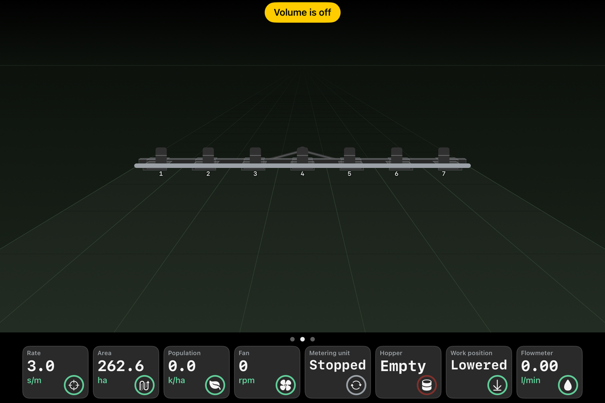
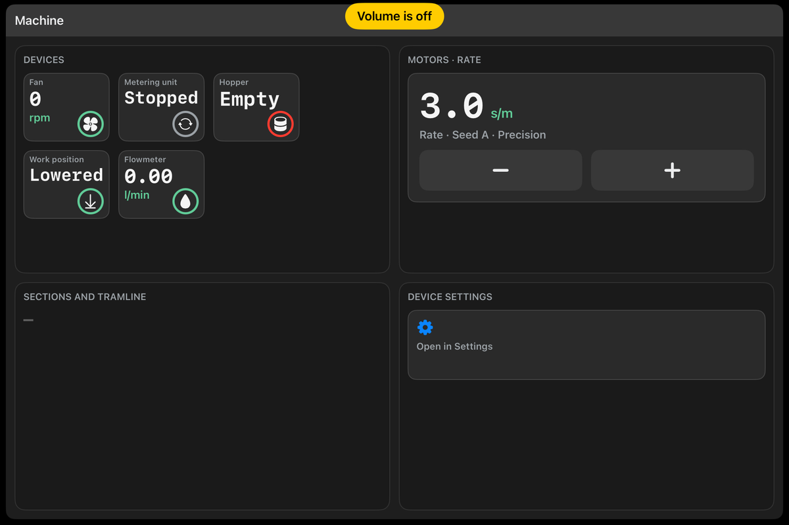
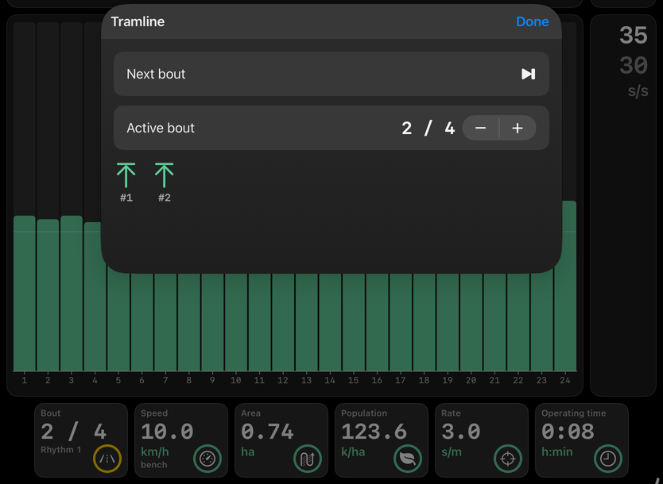

Agrigate
Bedienungsanleitung
Was Agrigate ist
Agrigate auf einer Seite — ein Gateway, das mit den Sensoren der Sämaschine spricht, und die Hectare-App auf einem iPad oder iPhone anstelle des Kabinenmonitors.
Agrigate ist ein Aussaat-Überwachungssystem von Agriwelt. Es überwacht den Saatgut- und Düngerfluss in jeder Reihe einer Drillmaschine oder eines Einzelkornsägeräts und schlägt Alarm, wenn eine Reihe ausfällt, zurückbleibt oder falsch sät. Es besteht aus zwei Teilen:
- Das Gateway. Ein kleines Gerät in der Kabine, angeschlossen an die Sensorleitung der Sämaschine. Es liest jeden Sensor an der Leitung und gibt das Gelesene per Bluetooth an das Tablet weiter. Es hat kein eigenes Display. In der App heißt es „Brücke“.
- Die Hectare-App auf einem iPad oder iPhone. Sie zeigt die Reihen, bewertet sie, löst die Alarme aus, führt die Statistik und richtet das Gateway und die Sensoren ein.
Was wodurch ersetzt wird
| Mit einem Hectare-Monitor | Mit Agrigate |
|---|---|
| Der Monitor in der Kabine, an die Sensorleitung angeschlossen | Das Gateway in der Kabine, an die Sensorleitung angeschlossen |
| Bildschirm und Tasten des Monitors | Die Hectare-App auf einem iPad oder iPhone, per Bluetooth mit dem Gateway verbunden |
| Der Summer des Monitors | Der Lautsprecher des Tablets — der Alarm ertönt über das Tablet |
Die Kornsensoren, der Hub HUB-8 und die Fahrgassen-Aktuatoren an der Sämaschine sind dieselben Agriwelt-Geräte, die auch an den Hectare-Monitoren arbeiten. Die App zeigt sie so, wie es die Hectare-Monitore tun: dieselben Balkenfarben, dasselbe Alarmfenster, dieselbe Tabelle und dieselbe Statistik.
Was es heute kann
- Saat- und Düngerreihen. Ein Balken je Reihe, in Körnern je Sekunde (Durchfluss) oder in Körnern je Meter (Hybrid, Einzelkorn). Siehe Der Reihenbildschirm.
- Alarme nach Reihennummer. Ein stummer, verstopfter oder defekter Sensor, eine Reihe, die nicht sät, eine Reihe unter oder über der Sollmenge, Doppelbelegungen und Fehlstellen. Siehe Das Alarmfenster.
- Statistik von fünf Schlägen — Fläche, besäte und unbesäte Fläche, Qualität. Siehe Statistik.
- Die Geräte der Maschine am Hub HUB-8: Behälter, Gebläse, Dosierer, Arbeitsstellung, Schleppereingänge, Durchflussmesser. Siehe HUB-8-Eingänge.
- Fahrgasse: Durchgänge und Rhythmus werden von der App gezählt, die Fahrgassen-Aktuatoren überwacht. Siehe Fahrgasse.
- Das Gateway aktualisieren aus der App. Siehe Das Gateway aktualisieren.
Jeder Alarm und jede Störung hat einen dreistelligen Servicecode. Siehe So funktionieren Servicecodes.
Was im Set enthalten ist
Die Teile eines Agrigate-Systems — das Gateway, die Hectare-App und die Agriwelt-Geräte an der Sämaschine — und was diese Vorabversion noch nicht auflistet.
Ein Agrigate-System besteht aus den unten genannten Teilen. Das Gateway und die App sind neu; alles an der Sämaschine ist dieselbe Agriwelt-Ausrüstung, die auch an den Hectare-Monitoren arbeitet.
| Teil | Wo es sitzt | Was es tut |
|---|---|---|
| Das Gateway (in der App „Brücke“) | In der Kabine | Liest jedes Gerät an der Sensorleitung und spricht per Bluetooth mit der App. Kein Display, keine Tasten, die Sie bei der Arbeit bedienen. |
| Die Hectare-App | Auf einem iPad oder iPhone in der Kabine | Zeigt und bewertet die Reihen, löst die Alarme aus, führt die Statistik, richtet das Gateway und die Sensoren ein. |
| Kornsensoren | Einer im Saatrohr jeder Reihe | Zählen die Körner ihrer Reihe. Derselbe Sensortyp überwacht auch Düngerreihen. |
| Hub HUB-8 (nur bei Bedarf) | An der Sämaschine | Bringt die übrigen Geräte der Maschine auf die Sensorleitung: Behälterfüllstand, Gebläsedrehzahl, Dosiererdrehung, Arbeitsstellung, Schleppereingänge, Durchflussmesser. |
| Fahrgassen-Aktuatoren (nur an Maschinen mit Fahrgassenschaltung) | An der Sämaschine | Schalten die Reihen der Fahrgasse ab. |
Die Kornsensoren sind nacheinander in einer Kette verbunden. Ein HUB-8 wird nur für die zusätzlichen Geräte der Maschine gebraucht; eine Sämaschine mit Kornsensoren allein hat keinen. Siehe HUB-8-Eingänge.
Was diese Version noch nicht auflistet
Die App ist nicht im App Store erhältlich. Während der Vorabversion stellt Agriwelt sie bereit.
Was Sie brauchen — iPad oder iPhone
Welches iPad oder iPhone die Hectare-App ausführt, warum die Modi Hybrid und Einzelkorn ein iPad mit GNSS brauchen und wie Sie das Tablet so einrichten, dass kein Alarm ungehört bleibt.
Das Tablet
| Was | Anforderung | Warum |
|---|---|---|
| Gerät | iPad oder iPhone | Die App läuft auf beiden. Auf dem iPad liegen die Seiten unter einer oberen Leiste, auf dem iPhone unter der Tab-Leiste unten. Siehe Zurechtfinden in der App. |
| System | iPadOS oder iOS 18 oder neuer | Die App ist für diese Version und neuere gebaut. |
| GNSS | Ein iPad mit GNSS (die Cellular-Modelle) für „Hybrid“ und „Einzelkorn“ | Körner je Meter brauchen die Fahrgeschwindigkeit, und die App bezieht sie vom GNSS des Tablets. Ohne GNSS wird nur der Modus Durchfluss (Körner je Sekunde) angeboten. |
| Bluetooth | Eingeschaltet und für die Hectare-App erlaubt | Die App erreicht das Gateway nur per Bluetooth. |
| Standort | Für die Hectare-App erlaubt (für Hybrid und Einzelkorn) | Ohne ihn liefert das Tablet keine Geschwindigkeit. |
Liefert ein iPad keine GNSS-Geschwindigkeit, sagt das „Einstellungen“ › „Produkte“: „Dieses iPad liefert keine GNSS-Geschwindigkeit — Hybrid und Einzelkorn sind nicht verfügbar. Nötig sind ein iPad mit GNSS (Cellular) und die Freigabe der Ortungsdienste.“
Das Tablet so einrichten, dass Sie jeden Alarm hören
Der Alarmsummer spielt über den Lautsprecher des Tablets.
| Einstellung | Wert |
|---|---|
| Lautstärke | Aufgedreht. Prüfen Sie sie mit „Testton“ unter „Einstellungen“ › „Überwachung und Alarme“. |
| Kopfhörer, externe Lautsprecher | Nicht verbunden. |
| Bildschirm | Eingeschaltet lassen: Schalten Sie „Bildschirm nicht abschalten“ unter „Einstellungen“ › „App“ ein, oder stellen Sie die automatische Sperre des Tablets auf Nie. |
| Bluetooth | Eingeschaltet. |
| Das Tablet in der Kabine | Nahe am Gateway. Jede Meldung zur Verbindung fordert Sie auf, das Tablet in der Nähe des Gateways zu halten. |
Die App sendet keine Mitteilungen; Nicht stören und die Fokus-Modi verändern den Alarm nicht.
Wie die Teile zusammenarbeiten
Der Weg eines Messwerts vom Sensor im Saatrohr bis zum Bildschirm des iPad — Sensorleitung, Gateway, Bluetooth, App — und was jeder Teil weiß.
Ein Messwert nimmt diesen Weg:
- Der Sensor im Saatrohr zählt die Körner seiner Reihe.
- Die Sensorleitung an der Sämaschine führt die Messwerte aller Sensoren, des HUB-8 und der Fahrgassen-Aktuatoren in die Kabine. Jedes Gerät an der Leitung hat seine eigene Nummer; bei einem Kornsensor gehört sie zu seiner Reihe.
- Das Gateway am Kabinenende der Sensorleitung fragt jedes Gerät der Reihe nach ab und sammelt die Antworten.
- Bluetooth trägt sie vom Gateway zum Tablet, etwa zweimal pro Sekunde.
- Die Hectare-App zeichnet die Reihen, bewertet sie gegen die Sollmenge und löst die Alarme aus.
Was jeder Teil weiß
| Teil | Weiß | Weiß nicht |
|---|---|---|
| Sensor | Seine eigene Zählung und seine eigenen Störungen | Etwas über die anderen Reihen |
| Gateway | Welche Geräte an der Leitung sind, in welcher Reihenfolge, und was jedes antwortet. Es speichert das Maschinenprofil, das die App darauf schreibt. | Was ein Eingang des HUB-8 bedeutet — ein Behälter, ein Gebläse, die Arbeitsstellung. Das steckt in der App. |
| App | Alles, was Sie sehen: die Menge, die Überwachungslinie, die Alarme, die Statistik, die Bedeutung jedes Geräts | — |
Die Bewertung findet also in der App statt: die Alarmverzögerung, der Anteil der Reihen, die säen müssen, die Toleranz — all das wird in der App eingestellt. Siehe Einstellungen „Überwachung und Alarme“.
Ein Gateway, ein Tablet
Ein Gateway spricht jeweils mit einem Tablet. Die App merkt sich ihr Gateway und verbindet sich von da an nur noch mit diesem; sind mehrere Gateways in Reichweite, fragt sie, welches Ihres ist. Siehe Erste Verbindung mit dem Gateway.
Wenn die Verbindung abreißt
Reißt Bluetooth ab oder hört das Gateway auf zu senden, dunkelt die App den Bildschirm ab — jede Zahl darauf ist veraltet — und öffnet nach 3 Sekunden das Alarmfenster „Verbindung zur Brücke verloren“. Das Fenster schließt sich von selbst, sobald das Gateway wieder antwortet. Siehe Code 601.
Zu den Bildern
Die Bilder in dieser Hilfe wurden während der Entwicklung der App am Prüfstand von Agriwelt aus der App aufgenommen — was auf ihnen nicht von einem echten Feld stammt.
Die Bilder in dieser Hilfe sind Bildschirmaufnahmen der Hectare-App auf Englisch, aufgenommen auf einem iPad, während die App entwickelt wird. Die App ist eine Vorabversion: Ein Bildschirm kann in Ihrer Version etwas anders aussehen.
Die meisten Bilder entstanden am Prüfstand von Agriwelt, nicht auf einem Feld. Das erkennen Sie an einigen Stellen:
| Was Sie auf einem Bild sehen | Warum |
|---|---|
| Die gelbe Kapsel „Lautstärke aus“ oben auf fast jedem Bildschirm | Das iPad am Prüfstand läuft mit leiser Lautstärke. In der Kabine ist diese Kapsel eine Warnung, dass Sie einen Alarm nicht hören würden — siehe Meldungen über dem Bildschirm. |
| Das Wort „Prüfstand“ unter der Geschwindigkeit | Die Geschwindigkeit wird am Prüfstand simuliert. In der Kabine kommt die Geschwindigkeit vom GNSS des iPad. |
| Reihen mit absichtlich erzeugten Störungen — eine stumme Reihe, eine blockierte Reihe, Reihen in der Fahrgasse | Der Prüfstand zeigt alle Zustände einer Reihe gleichzeitig. |
| Sehr große Flächen, Strecken und Kornzahlen auf dem Statistikbildschirm | Der Prüfstand läuft seit vielen Stunden. |
| Eine Maschine mit 7 Reihen und 25 m Arbeitsbreite | Eine Prüfstandseinstellung, keine echte Sämaschine. |
Einige Bilder wurden früher in der Entwicklung aufgenommen und auf den Teil zugeschnitten, der noch aktuell ist; die Erklärung unter jedem Bild sagt, worauf Sie achten sollen.
Das Gateway montieren und anschließen
Wo das Gateway hinkommt, woran es angeschlossen wird und was diese Vorabversion zu Kabeln und Stromversorgung noch nicht beschreibt.
Wo das Gateway hinkommt
Das Gateway kommt in die Kabine, in die Nähe der Halterung von iPad oder iPhone. Das Tablet erreicht das Gateway per Bluetooth: Je kürzer der Abstand, desto stabiler die Verbindung. Jede Meldung der App über eine verlorene oder gestörte Verbindung fordert Sie auf, das Tablet in der Nähe des Gateways zu halten.
Woran es angeschlossen wird
Das Gateway ersetzt den Hectare-Monitor am Kabinenende der Sensorleitung. Es wird an zwei Dinge angeschlossen:
- die Sensorleitung der Sämaschine — dieselbe Leitung mit Kornsensoren, HUB-8 und Fahrgassen-Aktuatoren, an die auch ein Hectare-Monitor angeschlossen würde;
- die Stromversorgung des Schleppers.
Die Sensorleitung an der Sämaschine selbst — die Sensoren nacheinander in einer Kette, der HUB-8, wo einer verwendet wird — wird wie für einen Hectare-Monitor verlegt.
Nach dem Anschließen prüfen
Der Anschluss ist richtig, wenn die App bei eingeschaltetem Gateway
- das Gateway findet und sich mit ihm verbindet — siehe Erste Verbindung mit dem Gateway;
- unter „Einstellungen“ › „Maschine“ bei „Sensoren derzeit am Bus“ die Anzahl der Geräte zeigt, die Sie an der Sämaschine erwarten — siehe Das Maschinenprofil einrichten;
- auf dem Reihenbildschirm jede Reihe der Maschine zeigt, keine davon mit einem roten ✕ — siehe Balkenfarben.
Erste Verbindung mit dem Gateway
Wie die Hectare-App das Gateway beim ersten Mal findet, wie Sie Ihres wählen, wenn mehrere in Reichweite sind, und wie Sie es später wechseln oder vergessen.
Die App findet das Gateway von selbst. Sie wählen es nur, wenn mehr als ein Gateway in Reichweite ist.
Schalten Sie das Gateway ein und halten Sie das Tablet in der Kabine, nahe am Gateway.
Öffnen Sie die Hectare-App. Beim ersten Mal fragt iPadOS, ob die App Bluetooth verwenden darf. Erlauben Sie es — ohne Bluetooth erreicht die App das Gateway nicht.
Die App sucht das Gateway. Eine rote Kapsel in der Bildschirmmitte sagt „Suche Brücke…“, und die Reihenseiten sagen „Die Brücke sendet die Reihenzahl nach dem Verbinden.“
Ein Gateway in Reichweite: Nach wenigen Sekunden verbindet sich die App von selbst damit und merkt es sich. Die Kapsel zeigt „Verbindung zu“ und den Namen des Gateways und verschwindet dann.
Mehrere Gateways in Reichweite: Die Liste „Brücke wählen“ öffnet sich. Jedes Gateway ist eine Zeile mit seinem Namen, seinen Signalbalken und seiner Signalstärke; das stärkste — meist das nächste — steht oben. Tippen Sie auf das Gateway Ihrer Sämaschine.
Die Reihen der Maschine erscheinen auf dem Reihenbildschirm. Stimmen sie nicht mit Ihrer Sämaschine überein, richten Sie das Maschinenprofil ein: Das Maschinenprofil einrichten.
Von nun an verbindet sich die App nur noch mit diesem Gateway — es ist „Meine Brücke“ unter „Einstellungen“ › „Maschine“ › „Brücke“. Wird das gemerkte Gateway einige Sekunden lang nicht gefunden, während andere in Reichweite sind, öffnet sich die Liste „Brücke wählen“ erneut.
Der Abschnitt „Brücke“ in den Einstellungen
„Einstellungen“ › „Maschine“, Abschnitt „Brücke“:
| Zeile | Was sie ist |
|---|---|
| Die erste Zeile | Die Verbindung: ein grüner Punkt und der Name des Gateways, wenn verbunden, oder was die App gerade tut, mit der Signalstärke. |
| „Meine Brücke“ | Das gemerkte Gateway oder „nicht gewählt“. Tippen Sie darauf, um die Liste „Brücke wählen“ zu öffnen und ein anderes zu wählen. |
| „Erneut verbinden“ | Trennt die Verbindung und verbindet sich erneut mit demselben Gateway. |
| „Brücke vergessen“ | Die App vergisst das Gateway, trennt die Verbindung und bietet die Liste erneut an. Sie fragt zuvor nach: „Die App trennt die Verbindung und lässt dich die Brücke neu wählen.“ — „Vergessen“ oder „Nein“. |
| „Firmware der Brücke“, „Hardware-Revision“ | Was das Gateway über sich selbst meldet. Geben Sie beides an den Service weiter, wenn danach gefragt wird. |
| „Brücken-Update“ | Siehe Das Gateway aktualisieren. |
| „Empfangene Frames“, „Schnappschüsse“, „Verlorene Frames“ | Zähler der Verbindung, für den Service. |
Das Maschinenprofil einrichten
Sagen Sie der App, wie viele Saatreihen und Düngersensoren die Maschine hat und — für Hybrid und Einzelkorn — wie breit sie arbeitet; die App schreibt das Profil selbst in das Gateway.
Das Maschinenprofil sagt dem Gateway, welche Sensoren es lesen soll, und der App, wie sie diese zeichnen soll: wie viele Saatreihen, wie viele Düngersensoren und für die Modi Hybrid und Einzelkorn die Arbeitsbreite. Es wird im Gateway gespeichert, ein anderes Tablet am selben Gateway liest also dasselbe Profil.
Öffnen Sie „Einstellungen“ › „Maschine“. Oben öffnet sich der Abschnitt „Maschinenprofil“.
Stellen Sie „Reihen“ — die Anzahl der Saatreihen — mit − / + ein.
Stellen Sie „Düngersensoren“ ein — die Anzahl der Düngerreihen mit Sensor — oder „keine“.
Warten Sie einen Moment. Es gibt keine Speichern-Taste: Nach einer kurzen Pause schreibt die App das Profil in das Gateway. Die Statuszeile unter den Zahlen sagt „schreibe Profil in die Brücke…“ und danach „Profil in die Brücke geschrieben um“ mit der Uhrzeit.
Vergleichen Sie „Sensoren derzeit am Bus“ mit dem, was an der Sämaschine ist: Die Zahl zählt jedes Gerät, das an der Sensorleitung antwortet.
Nur Hybrid und Einzelkorn: Stellen Sie „Breite, cm“ ein — die Arbeitsbreite. „Reihenabstand“ darunter rechnet die App aus: die Breite geteilt durch die Reihen der Gruppe.
Wenn das Profil nicht geschrieben wird
| Die Statuszeile sagt | Was es bedeutet | Was zu tun ist |
|---|---|---|
| „Brücke beschäftigt: Aussaat läuft“ | Das Gateway nimmt kein neues Profil an, solange Saatgut fließt. | Halten Sie die Sämaschine an und ändern Sie die Zahl erneut. |
| „zu viele Reihen für die Brücke (bis“ … | Das Profil ist größer, als das Gateway annimmt. | Verringern Sie die Reihen oder Geräte. Siehe Code 902. |
| Jede andere Meldung mit einem Code | Das Gateway hat das Profil abgelehnt. | Siehe 9xx · Setup-Antworten des Gateways. |
Breite und Statistik
Die Fläche und der Reihenabstand ergeben sich aus der Breite. Hat der aktive Schlag bereits Statistik, fragt eine neue Breite zuerst nach: „Statistik muss gelöscht werden!“ — „Ja“ beginnt die Statistik des aktiven Schlags bei null, „Nein“ behält die alte Breite.
Die Düngerreihen folgen auf die Saatreihen. Sind Düngersensoren im Profil, zeigt der Reihenbildschirm zwei Bänder: oben Saat, darunter Dünger. Siehe Der Reihenbildschirm.
Zurechtfinden in der App — die obere Leiste und der Seitenring
Die fünf Seiten der Hectare-App auf einem Ring, die obere Leiste des iPad, die Tab-Leiste des iPhone und was „Start“ öffnet.
Die App hat fünf Seiten — „Reihen“, „Tabelle“, „Statistik“, „Feld“ und „Maschine“ — und zwei Orte, die keine Seiten sind: die Liste der „Alarme“ und die „Einstellungen“.
Die obere Leiste auf dem iPad

- „Start“ — öffnet den Startbildschirm des Tabs „Aussaat“, standardmäßig „Reihen“. Was sie öffnet, stellen Sie unter „Einstellungen“ › „App“ › „Startbildschirm des Tabs ‚Aussaat‘“ ein.
- Die fünf Seiten. Tippen Sie auf eine, um sie zu öffnen. Die Reiter stehen immer in derselben Reihenfolge.
- Die Seite auf dem Bildschirm — ihr Reiter leuchtet.
- „Alarme“ — die Liste der Alarme, die gerade aktiv sind. Die Glocke ist rot mit einer Zahl, wenn Alarme aktiv sind: die Zahl der Reihen, Geräte und Verbindungen im Alarm. Tippen Sie erneut darauf, um zur vorherigen Seite zurückzukehren.
- „Einstellungen“ — tippen Sie erneut darauf, um zur vorherigen Seite zurückzukehren.
Der Seitenring
Die Seiten stehen auf einem Ring. Wischen Sie nach links, um zur nächsten Seite zu gehen, nach rechts, um zurückzugehen: „Reihen“ → „Tabelle“ → „Statistik“ → „Feld“ → „Maschine“ → wieder „Reihen“. Ein Wisch muss eine deutliche seitliche Bewegung sein; Drücken und Ziehen auf einer Seite (die Überwachungslinie, eine Reihe) blättert nicht um.
Die Tab-Leiste auf dem iPhone
Auf einem iPhone — und auf einem iPad, wenn die App nur einen schmalen Teil des Bildschirms hat — ersetzt eine Tab-Leiste am unteren Bildschirmrand mit vier Reitern die obere Leiste:
| Reiter | Was er enthält |
|---|---|
| „Aussaat“ | Den Ring „Reihen“ → „Tabelle“ → „Statistik“ → „Feld“, per Wisch gedreht; Punkte unter der Seite zeigen, wo Sie sind. Tippen Sie erneut auf den leuchtenden Reiter, um zur Startseite zu gehen. |
| „Maschine“ | Die Seite „Maschine“. |
| „Alarme“ | Die Liste der aktiven Alarme, mit der Zahl der Alarme auf dem Reiter. |
| „Einstellungen“ | Die Einstellungen. |
Was über jeder Seite liegt
Welche Seite auch geöffnet ist, drei Dinge können darüber erscheinen: das Alarmfenster (Das Alarmfenster), eine rote Kapsel zur Verbindung mit dem Gateway und eine gelbe Kapsel zum Ton (Meldungen über dem Bildschirm).
Die Liste der Alarme
„Alarme“ zeigt eine Zeile je Alarmart, mit den Reihen oder Geräten, die sie betrifft — dieselben Worte wie das Alarmfenster. Ist nichts aktiv, steht dort „Keine aktiven Alarme“. Vergangene Alarme werden nicht gespeichert.
Der Reihenbildschirm
Die wichtigste Arbeitsseite — ein Balken je Reihe, die Überwachungslinie oder die Sollmenge, die Mengenspalte rechts von jedem Band und die Kacheln unten.
„Reihen“ ist die wichtigste Arbeitsseite und standardmäßig die Startseite. Jede Reihe der Maschine ist ein Balken, der von der unteren Linie aus wächst; seine Höhe ist der Fluss seiner Reihe, seine Farbe ist die Bewertung.
- Tonwarnung. Hier „Lautstärke aus“: Ein Alarm wäre nicht zu hören. Meldungen über dem Bildschirm
- Mengenspalte des Saatbandes. Oben der Istwert des Bandes, darunter der Sollwert (grau), unten die Einheit: „K/m“ (Körner je Meter, Hybrid und Einzelkorn) oder „K/s“ (Körner je Sekunde, Durchfluss).
- Eine Reihe in der Fahrgasse — grau schraffiert. Über Reihe 4 ist das Saatgut rot schraffiert: Diese Reihe sät in die Fahrgasse. Fahrgasse
- Blauer Balken — die Reihe sät mehr, als die Sollmenge zulässt (Hybrid und Einzelkorn).
- Die Sollmengenlinie quer über jede Spalte, mit den Toleranzlinien darüber und darunter (Hybrid und Einzelkorn). Im Durchfluss steht hier eine einzelne Überwachungslinie.
- Grüner Balken — die Reihe sät innerhalb ihrer Toleranz.
- Rote Spalte — ein Sensor, der seit dem Einschalten nie geantwortet hat, blinkt hellrot. Balkenfarben
- Gelber Balken — die Reihe sät weniger als erlaubt.
- Reihennummern, unter den Spalten.
- Mengenspalte des Düngerbandes, hier in Körnern je Sekunde.
- Düngerband. Sind Düngersensoren im Profil, stehen die Saatreihen im oberen Band und die Düngerreihen im unteren Band.
- Die Kacheln — Geschwindigkeit, Fläche, Saatstärke und die Geräte der Maschine. Die Kacheln unten
Ohne Düngersensoren stehen bis zu 20 Saatreihen in einem Band; mehr stehen in zwei Bändern, die erste Hälfte oben.
Was Sie auf dieser Seite tun können
| Um dies zu tun | Gehen Sie so vor |
|---|---|
| Die Überwachungslinie (Durchfluss) oder die Sollmenge (Hybrid, Einzelkorn) verschieben | Halten Sie die Ziffern in der Mengenspalte gedrückt und ziehen Sie dann nach oben oder unten. Der Wert ändert sich mit jeweils 12 Punkten Fingerweg (eine kurze Bewegung) um einen Schritt; die Hervorhebung erlischt 5 Sekunden nach der letzten Berührung. Bei Hybrid und Einzelkorn geht die neue Sollmenge an das Gateway, wenn Sie den Finger heben. |
| Das Menü einer Reihe öffnen | Halten Sie einen Balken gedrückt: Eine Lupe nennt die Reihe unter dem Finger; gleiten Sie zur gewünschten Reihe und heben Sie den Finger. Oder tippen Sie auf ein Band: Die acht Reihen um den Finger öffnen sich groß; tippen Sie auf eine. Das Reihenmenü |
| Die Sollmenge durch Eintippen ändern | Tippen Sie auf die Kachel „Dichte“ oder „Saatmenge“. Die Kacheln unten |
| Zu einer anderen Seite gehen | Wischen Sie nach links oder rechts oder tippen Sie auf einen Reiter. Zurechtfinden in der App |
Wenn das Band nicht überwacht wird
Die Überwachung beginnt, wenn genügend Reihen 3 Sekunden hintereinander innerhalb der Norm säen — der Anteil wird bei „Anteil säender Reihen“ eingestellt. Fließt Saatgut, aber zu wenige Reihen liegen innerhalb der Norm, zeigt das Band die blinkende gelbe Kapsel „NICHT ÜBERWACHT“ mit ihren Reihen, und der Summer ertönt. Es öffnet sich kein Fenster. Prüfen Sie die Überwachungslinie oder die Sollmenge und die aus der Überwachung genommenen Reihen. Code 207
Solange die Verbindung zum Gateway unterbrochen ist, ist die ganze Seite abgedunkelt: Die Balken zeigen die letzte Messung, nicht die gegenwärtige.
Balkenfarben und die drei Rottöne
Was jede Farbe, Schraffur und jedes Zeichen am Balken einer Reihe auf dem Reihenbildschirm bedeutet, und die drei verschiedenen Rottöne.
In der Kabine lesen Sie die Farbe, nicht den Text. Jeder Balken des Reihenbildschirms hat eines der folgenden Erscheinungsbilder.
Der Balken selbst
| Was Sie sehen | Was es bedeutet |
|---|---|
| Grüner Balken | Die Reihe sät innerhalb der Norm. |
| Gelber Balken | Die Reihe sät unter der Überwachungslinie (Durchfluss) oder unter dem Toleranzband (Hybrid, Einzelkorn). |
| Blauer Balken | Die Reihe sät über dem Toleranzband. Nur bei Hybrid und Einzelkorn. |
| Gelbe und blaue schmale Balken beiderseits eines grünen | Fehlstellen (gelb, links) und Doppelbelegungen (blau, rechts) der Reihe. Nur bei Einzelkorn, bei eingeschaltetem „Fehlstellen & Doppel“. |
Die drei Rottöne
| Was Sie sehen | Was es bedeutet | Was zu tun ist |
|---|---|---|
| Hellrot, blinkend, mit einem roten ✕ | Der Sensor hat seit dem Einschalten des Gateways nie geantwortet. | Prüfen Sie Stecker und Kabel des Sensors. Code 101 |
| Grauer Hintergrund mit einem roten ✕ | Der Sensor hat geantwortet und ist dann verstummt. | Prüfen Sie Stecker und Kabel des Sensors. Code 101 |
| Dunkelrot, blinkend | Der Sensor ist da, aber kein Korn passiert ihn. | Prüfen Sie den Dosierer und das Saatrohr. Code 202 |
Eine hellrote Spalte, die mit einem ? blinkt, bedeutet, dass das Gerät unter der Nummer dieser Reihe kein Kornsensor ist. Code 106
Weitere Erscheinungsbilder
| Was Sie sehen | Was es bedeutet |
|---|---|
| Weiße Spalte mit einem schwarzen ! | Die Reihe ist aus der Überwachung genommen: Sie löst keine Alarme aus und zählt nicht zum Anteil säender Reihen. Das Reihenmenü |
| Graue Schraffur | Die Reihe liegt in der Fahrgasse und soll nicht säen. Fahrgasse |
| Rote Schraffur über dem Grau | Die Reihe sät, obwohl sie in der Fahrgasse liegt. Code 206 |
| Ein ? über einer leeren Spalte | Über die Reihe ist noch nichts bekannt. |
| Ein Balken, der sich langsam füllt, mit einem gelben ? | Das Gateway schickt dem Sensor eine neue Einstellung, zum Beispiel eine neue „Fraktion“. Die Reihen tun das nacheinander; es dauert je Reihe einige Sekunden. |
Ein Sensor, der eine Störung meldet — verstopft, geblendet, defekt —, behält seinen Balken; den Grund nennt das Alarmfenster. 1xx · Störungen des Reihensensors
Dieselben Farben stehen in der eingebauten Hilfe: „Einstellungen“ › „App“ › „Hilfe“ › „Farben der Balken und die drei Roten“.
Die Kacheln unten
Der Kachelstreifen unter den Reihen und dem Feldbild — was jede Kachel zeigt, was ein Tippen öffnet, wie Sie wählen, was ein Platz zeigt, und der Alarmplatz rechts.
Unter „Reihen“ und unter „Feld“ steht ein Streifen aus Kacheln. Jede Kachel zeigt einen Wert: oben ein Wort, den Wert in großen Ziffern, die Einheit und ein Symbol in einem Ring. Die Farbe des Rings ist der Zustand: grün — normal, rot — Alarm (der Ring blinkt), gelb — Achtung, grau — keine Daten oder keine Antwort.
Der Streifen ist da, wenn die Maschine etwas darin zu zeigen hat: eine Saatgruppe im Modus Hybrid oder Einzelkorn oder Geräte am HUB-8. Eine Maschine im Modus Durchfluss ohne Geräte hat keinen Streifen.
Was die Kacheln zeigen können
| Kachel | Was sie zeigt | Ein Tippen öffnet |
|---|---|---|
| „Geschw.“ | Die Fahrgeschwindigkeit in km/h vom GNSS des iPad | Das Geschwindigkeitsblatt: die Geschwindigkeit und woher sie kommt |
| „Fläche“ | Hektar des aktiven Schlags | „Statistik“ |
| „Dichte“ | Tausend Körner je Hektar (Einzelkorn) | Das Mengenblatt |
| „Saatmenge“ | Die eingestellte Sollmenge in Körnern je Meter | Das Mengenblatt |
| „Betriebszeit“ | Stunden und Minuten Arbeit auf dem aktiven Schlag | „Statistik“ |
| „Feld“ | Die Nummer des aktiven Schlags | „Statistik“ |
| „Durchgang“ | Der Fahrgassen-Durchgang, zum Beispiel 2 / 4 | Das Durchgangsmenü. Fahrgasse |
| Ein Gerät — „Behälter“, „Gebläse“, „Dosierer“, „Stellung“, „Durchflussmesser“ … | Sein Zustand in einem Wort („Voll“ / „Leer“, „Läuft“ / „Steht“, „Arbeit“ / „Transport“) oder sein Wert (U/min, l/min) | Die Seite dieses Geräts. HUB-8-Eingänge |
Wählen, was ein Platz zeigt
Der Streifen hat so viele Plätze, wie quer über den Bildschirm passen: 3 auf einem hochgehaltenen iPhone, bis zu 8 auf einem quer gehaltenen iPad.
Halten Sie eine Kachel eine halbe Sekunde lang gedrückt. Darunter öffnet sich die Liste „Wert wählen“: jeder Wert, den die Maschine zeigen kann, mit seinem Symbol und seinem aktuellen Wert; der an diesem Platz ist markiert.
Tippen Sie auf den gewünschten Wert. Ist er schon an einem anderen Platz, tauschen die beiden.
Die Auswahl wird für das Maschinenprofil gespeichert. „Standardbelegung“ unter „Einstellungen“ › „Maschine“ stellt Geschwindigkeit, Fläche, Dichte und die ersten Geräte wieder her.
Der Alarmplatz
Der Platz ganz rechts ist zugleich der Alarmplatz. Geht ein Gerät in Alarm, das an keinem Platz des Streifens steht, steht seine Kachel dort mit blinkendem Ring, bis der Alarm vorbei ist; ein Tippen öffnet seine Seite. Solange sie dort steht, öffnet langes Drücken keine Auswahl — der Alarm wird nicht durch eine Auswahl verdeckt.
Das Mengenblatt
Das Mengenblatt zeigt die Sollmenge in Körnern je Meter in großen Ziffern und darunter die Dichte in Tausend Körnern je Hektar. Ändern Sie sie mit − / + (gedrückt halten für Zehnerschritte) oder tippen Sie auf eine Zahl und geben Sie sie ein. Nichts erreicht das Gateway, bevor Sie „Übernehmen“ drücken; Wischen des Blattes nach unten lässt die Sollmenge unverändert.
Die Tabelle
Jede Reihe in Zahlen — Menge, Qualität, Doppelbelegungen, Fehlstellen, Dichte und Abweichung — auf Seiten, mit der Summenzeile und den zurückgesetzten Zählern.
„Tabelle“ zeigt jede Reihe als Zeile aus Zahlen. Nutzen Sie sie, wenn ein Balken Ihnen sagt, dass etwas nicht stimmt, und Sie die Zahlen wollen.

- Die Seite — hier „Saatgut · Tsd/ha“. Tippen Sie auf den Titel, um zur nächsten Seite zu gehen.
- ◄ ► und die Seitenzahl — zur vorigen oder zur nächsten Seite.
- „Zurücksetzen“ — setzt die Zähler der Tabelle auf null. Es fragt zuvor nach: „Werte zurücksetzen?“ — „Ja“ oder „Nein“.
- Spaltenköpfe. Auf dieser Seite: Reihennummer, „K/m“ Körner je Meter, „Q.%“ Qualität, „Dp%“ Doppelbelegungen, „Fs%“ Fehlstellen, „Tsd/ha“ Tausend Körner je Hektar und % die Abweichung von der Sollmenge.
- Eine gelbe Zelle — der Wert liegt über der Hälfte seiner Alarmschwelle. Hier hat Reihe 3 14 % Fehlstellen.
- Eine rote Zelle — der Wert liegt über seiner Alarmschwelle. Hier hat Reihe 5 keinen Fluss: ----- statt der Menge.
- Die Abweichung von der Sollmenge, rot jenseits der Toleranz.
- Σ — die Summenzeile aller Reihen.
Die Seiten
Welche Seiten es gibt, hängt vom Überwachungsmodus jeder Gruppe ab (Einstellungen „Produkte“):
| Modus | Seiten |
|---|---|
| Einzelkorn | Drei Saatseiten: Tausend Körner je Hektar, Körner je Meter, Zähler; danach eine Düngerseite, wenn die Düngergruppe nicht im Modus Einzelkorn ist |
| Hybrid | Die Zählerseite, in Körnern je Meter |
| Durchfluss | Die Zählerseite, in Körnern je Sekunde |
Zeichen in der Mengenspalte
| Zeichen | Bedeutung |
|---|---|
| ----- | Kein Fluss in der Reihe |
| ! | Die Reihe ist aus der Überwachung genommen |
| X | Der Sensor wird nicht gefunden |
| ? | Das Gerät unter der Nummer der Reihe ist kein Kornsensor |
Reihen der Fahrgasse sind grau gestreift, wie auf dem Reihenbildschirm.
Was Sie tun können
| Um dies zu tun | Gehen Sie so vor |
|---|---|
| Das Menü einer Reihe öffnen | Tippen Sie auf ihre Zeile. Das Reihenmenü |
| Mehr Reihen sehen | Scrollen Sie die Zeilen nach oben oder unten. Ein seitliches Wischen blättert die Seite der App um. |
| Die Zähler auf null setzen | „Zurücksetzen“ → „Ja“ |
Statistik
Die Statistik von fünf Schlägen — Strecke, Fläche, Zeit, besäte und unbesäte Fläche, Qualität, Dichte — und wie Sie einen Schlag wählen oder seine Statistik zurücksetzen.
„Statistik“ führt Buch über die Arbeit auf fünf Schlägen. Einer davon ist aktiv: Alles, was die Maschine sät, wird auf ihn gezählt.

- Der Schlag auf dem Bildschirm. (A) kennzeichnet den aktiven Schlag.
- ◄ ► und 1/5 — die anderen vier Schläge ansehen.
- Das Menü … — „Feld wählen“ und „Statistik zurücksetzen“. Weiter unten
- „Feldarbeit“ — „Strecke“, „Fläche“, „Betriebszeit“ und die mittlere „Fahrgeschw.“.
- Wann die Arbeit auf diesem Schlag „Start“ und „Ende“ hatte.
- „Überwachung“ — „Ohne Alarmüberwachung“ und „Außerhalb Geschw.-Bereich“. In dieser Version zeigen beide einen Strich.
- Der Qualitätsbalken der „Aussaat“: „Qualität“, „Doppel“, „Fehlstelle“ und „Ungesät“ als Anteile eines Balkens (Einzelkorn).
- „Körner gesamt“ (in Tausend), „Dichte“ und „Saatmenge“: der Istwert groß, darunter der Sollwert und der Istwert in Prozent des Sollwerts — rot jenseits der Toleranz.
- „Gesät“, „Ungesät“, „Unbekannt“ — in Hektar, wenn eine Geschwindigkeit vorliegt; sonst als Anteile der Zeit ohne Geschwindigkeit.
- Die Reihen einzeln — dieselben Zahlen für jeden Sensor („Kornsensoren“, danach die Düngersensoren).
Was der Block „Aussaat“ zeigt, hängt vom Überwachungsmodus der Gruppe ab. Bei Einzelkorn erhalten Sie den Qualitätsbalken, die gesamten Körner, die Dichte und die Sollmenge. Bei Durchfluss und Hybrid erhalten Sie die drei Mengen „Gesät“, „Ungesät“ und „Unbekannt“. Bei zwei Gruppen im Modus Einzelkorn zeigt ein Seitenschalter im Titel des Blocks die andere Gruppe.
Einen Schlag wählen oder zurücksetzen
Holen Sie mit ◄ ► den gewünschten Schlag auf den Bildschirm.
Tippen Sie auf … rechts vom Titel.
Wählen Sie:
- „Feld wählen“ — dieser Schlag wird der aktive. Enthält er bereits Statistik, sagt die App zuerst „Daten löschen, um dieses Feld zu wählen!“: „Ja“ macht ihn aktiv, mit Zählern bei null.
- „Statistik zurücksetzen“ — die App fragt „Sind Sie sicher?“; „Ja“ setzt die Statistik dieses Schlags auf null.
„Feld wählen“ wird nur angeboten, wenn der Schlag auf dem Bildschirm nicht der aktive ist.
Das Feldbild
Die Sämaschine in Perspektive gezeichnet, wobei jede Reihe den Boden hinter sich in der Farbe ihres Balkens färbt — die letzten Meter jeder Reihe auf einen Blick.
„Feld“ zeichnet die Sämaschine so, wie Sie sie aus der Kabine sehen würden, auf einem Feld, das sich unter ihr bewegt. Jede Saatreihe ist eine Säule auf dem Balken der Sämaschine — derselbe Balken wie unter „Reihen“, mit seiner Höhe und Farbe. Hinter jeder Reihe ist der Boden in der Farbe gefärbt, die die Reihe zeigt, und der gefärbte Streifen läuft mit der Geschwindigkeit der Maschine zum Horizont. So sehen Sie die letzten Meter jeder Reihe auf einen Blick: Eine Reihe, die ausgefallen ist, hinterlässt eine Lücke, die sich von der Sämaschine entfernt.

Das Bild wird aus dem gezeichnet, was die Reihen und die Geschwindigkeit in diesem Augenblick zeigen. Es ist keine Karte: Nichts wird gespeichert, und es hat keine GNSS-Spur.
Was Sie tun können
| Um dies zu tun | Gehen Sie so vor |
|---|---|
| Von einer anderen Seite schauen | Tippen Sie auf das Bild. Es wechselt durch drei Ansichten: von oben, von hinten und von vorn nach hinten blickend (darauf steht „Blick nach hinten“). Das iPad merkt sich die letzte Ansicht. |
| Die Düngerreihen sehen | Sind Düngersensoren im Profil, schalten Sie oben zwischen „Saatgut“ und „Dünger“ um. Ein roter Punkt an der anderen Auswahl sagt Ihnen, dass eine Reihe dieser Gruppe rot ist. |
| Die Kacheln nutzen | Der Streifen unter dem Bild ist derselbe wie unter „Reihen“. Die Kacheln unten |
Die Alarme stehen nicht auf dieser Seite: Das Alarmfenster öffnet sich darüber wie über jeder Seite. Das Alarmfenster
Die Maschinenseite
Die Geräte der Maschine, die Saatmenge mit − und +, die Fahrgasse und der Weg zu den Geräteeinstellungen auf einer Seite.
„Maschine“ zeigt alles an der Sämaschine, was keine Reihe ist: die Geräte am Hub HUB-8, die Sollmenge, die Fahrgasse. Auf einem quer gehaltenen iPad hat sie vier Blöcke; auf einem iPhone und auf einem hochgehaltenen iPad stehen die Blöcke untereinander.

- Der Seitentitel.
- „Geräte“ — jedes Gerät der Maschine als Kachel: sein Name, sein Zustand oder Wert und ein Symbol in einem nach Zustand gefärbten Ring. Ein Gebläse und ein Dosierer drehen sich, solange sie arbeiten. Tippen Sie auf eine Kachel, um die Seite des Geräts zu öffnen.
- „Motoren · Menge“ — die Sollmenge der Saatgruppe im Modus Hybrid oder Einzelkorn, groß, mit dem, was darunter steht. Tippen Sie auf die Zahl, um das Mengenblatt zu öffnen.
- − / + — ändern die Sollmenge um einen Schritt; gedrückt halten für zehn Schritte. Jeder Schritt geht sofort an das Gateway.
- „Teilbreiten und Fahrgasse“ — der Fahrgassen-Durchgang, der Rhythmus und die Aktuatoren, wenn die Maschine eine Fahrgasse hat; ohne Fahrgasse ein Strich. Fahrgasse
- „Geräteeinstellungen“ › „In Einstellungen öffnen“ — öffnet „Einstellungen“ › „Maschine“.
- Ein Gerät im Alarm — hier ist der Behälter „Leer“: Der Ring ist rot und blinkt.
Wenn nichts zu zeigen ist
| Die Seite sagt | Warum | Was zu tun ist |
|---|---|---|
| „Die Brücke ist nicht verbunden“ | Die App hat keine Verbindung zum Gateway. | Siehe Erste Verbindung mit dem Gateway. |
| „Keine Geräte im Profil“ | Das Maschinenprofil enthält keine Geräte am HUB-8. | Fügen Sie sie hinzu: HUB-8-Eingänge. |
Die Gerätezustände und ihre Farben sind dieselben wie auf den Kacheln des Reihenbildschirms. Die Kacheln unten
Das Alarmfenster
Wann die App das Alarmfenster öffnet, was das Fenster zeigt, wie Reihen sich ihm anschließen, wie Sie es schließen und wie der Summer und die Alarmverzögerung arbeiten.
Ein Alarm ist ein Fenster, das sich mit dem Summer über der gerade angezeigten Seite öffnet. Es sagt Ihnen, dass eine Reihe, ein Gerät der Maschine oder die Verbindung zum Gateway eine Störung hat.

- „ALARM!“ — der Titelstreifen jedes Alarmfensters; er blinkt. Rot bei einem Alarm, orange bei einem Gerät, das sich selbst als gestört meldet („Verstopft“, „Fremdlicht“, „Defekt“, „Falscher Gerätetyp!“ …).
- Der Alarm — hier „Behälter leer“. Suchen Sie ihn anhand dieser Worte in den Servicecodes.
- Die Tonzeile — hier „Lautstärke aus“: Der Summer läuft, aber die Lautstärke des Tablets ist heruntergedreht. Drehen Sie sie auf.
- „Schließen“ — schließt das Fenster und stoppt den Summer. Die ganze Taste nimmt die Berührung an.
- Die Kachel des Geräts im Alarm, mit rot blinkendem Ring.
Bei einer Reihe nennt das Fenster zusätzlich den Sensor und die Reihen:

„Kornsensor:“ oder „Düngersensor:“ sagt Ihnen, welche Gruppe, und die Reihennummern folgen — #4,12–14 bedeutet die Reihen 4, 12, 13 und 14. Bei einem Fahrgassen-Aktuator sagt das Fenster „Fahrgassenaktor“ und seine Nummer.
Wie sich das Fenster verhält
- Die Störung muss die Alarmverzögerung lang anhalten, bevor sich das Fenster öffnet — 3 Sekunden, sofern unter „Einstellungen“ › „Überwachung und Alarme“ › „Alarmverzögerung“ nichts anderes eingestellt ist (2 bis 20 Sekunden). Ein Gerät, das kein Kornsensor ist („Falscher Gerätetyp!“), wird sofort gemeldet.
- Derselbe Alarm in einer anderen Reihe schließt sich dem offenen Fenster an: Ihre Nummer wird ergänzt. Ein anderer Alarm wartet, bis Sie dieses schließen, und öffnet sich dann.
- Ein geschlossener Alarm kommt nicht wieder, solange seine Störung anhält. Er erscheint erst wieder, nachdem die Störung verschwunden und zurückgekehrt ist.
- Die Verbindung zum Gateway hat Vorrang. War die Verbindung 3 Sekunden lang unterbrochen, ersetzt das Fenster „Verbindung zur Brücke verloren“ jedes andere Fenster: Jede Zahl auf dem Bildschirm ist veraltet. Es schließt sich von selbst, sobald das Gateway wieder antwortet.
- Das Schließen des Fensters behebt die Störung nicht. Aktive Alarme bleiben in der Liste hinter der Glocke — siehe Zurechtfinden in der App.
Der Summer
Der Summer ertönt, solange ein Alarmfenster offen ist: alle zwei Sekunden ein kurzer Ton über den Lautsprecher des Tablets. „Schließen“ stoppt ihn. Solange ein Band „NICHT ÜBERWACHT“ ist, ertönt er ohne Fenster.
Unter „Einstellungen“ › „Überwachung und Alarme“ › „Alarmsummer“: „Lautstärke“ („Leise“, „Mittel“, „Laut“), „Testton“ und „10 Min still“. Die Stille schaltet nur den Summer stumm: Das Fenster öffnet sich trotzdem.
Meldungen über dem Bildschirm
Die roten und gelben Kapseln, die über jeder Seite erscheinen — die Verbindung zum Gateway, der Ton und die Aussaat ohne Überwachung — was jede bedeutet und was zu tun ist.
Neben dem Alarmfenster spricht die App über kleine Kapseln über der Seite. Das sind keine Fenster: Sie müssen nicht geschlossen werden und verschwinden, sobald die Ursache weg ist.
Rote Kapsel in der Bildschirmmitte — die Verbindung zum Gateway
Solange die rote Kapsel angezeigt wird, hat die App keine Live-Daten: Die Seite ist abgedunkelt und zeigt die letzte Messung.
| Die Kapsel sagt | Was es bedeutet | Was zu tun ist |
|---|---|---|
| „Suche Brücke…“ | Die App sucht ihr Gateway. | Prüfen Sie, ob das Gateway Strom hat und das Tablet nahe daran ist. |
| „Verbindung zu“ und ein Name | Das Gateway ist gefunden; die App verbindet sich. | Warten Sie. |
| „Verbindung zu“ ein Name „verloren, suche…“ | Die Verbindung ist abgerissen; die App sucht dasselbe Gateway erneut. | Warten Sie; prüfen Sie die Stromversorgung des Gateways. Nach 3 Sekunden öffnet sich das Fenster „Verbindung zur Brücke verloren“. Code 601 |
| „Brücke schweigt…“ | Die Verbindung steht, aber das Gateway sendet nichts. | Warten Sie 10 Sekunden; bleibt es so, schalten Sie die Stromversorgung des Gateways aus und wieder ein. Code 602 |
| „Brücke wählen“ | Mehrere Gateways sind in Reichweite, oder Ihres wird nicht gefunden. Tippen Sie auf die Kapsel, um die Liste zu öffnen. | Tippen Sie auf Ihr Gateway. Erste Verbindung |
| „Bluetooth ausgeschaltet“ | Bluetooth ist am Tablet ausgeschaltet. | Schalten Sie es ein. Code 704 |
| „Keine Bluetooth-Berechtigung“ | Die App darf Bluetooth nicht verwenden. | Erlauben Sie es in den iPad-Einstellungen. Code 705 |
Gelbe Kapsel oben — der Ton
| Die Kapsel sagt | Was es bedeutet | Was zu tun ist |
|---|---|---|
| „Lautstärke aus“ | Die Lautstärke des Tablets liegt unter 20 %: Ein Alarm wäre nicht zu hören. | Drehen Sie die Lautstärke auf. Code 701 |
| „Ton im Kopfhörer“ | Der Ton geht an Kopfhörer, einen Bluetooth-Lautsprecher oder ein anderes Gerät. | Trennen Sie es. Code 702 |
Dieselbe gelbe Zeile erscheint im Alarmfenster, damit Sie wissen, warum Sie ihn nicht gehört haben.
Gelbe Kapsel über einem Band — Überwachung
| Die Kapsel sagt | Was es bedeutet | Was zu tun ist |
|---|---|---|
| „NICHT ÜBERWACHT“ und die Reihen des Bandes, blinkend | Im Band fließt Saatgut, aber weniger Reihen säen innerhalb der Norm, als dem eingestellten Anteil entspricht. Der Summer ertönt. | Prüfen Sie die Überwachungslinie oder die Sollmenge und die gelben und dunkelroten Reihen. Code 207 |
Einstellungen
Die fünf Gruppen der Einstellungen — Produkte, Überwachung und Alarme, Maschine, App, Service — und was in jeder steckt.
Öffnen Sie die Einstellungen mit dem Zahnrad rechts in der oberen Leiste oder mit „Einstellungen“ in der Tab-Leiste eines iPhone. Auf einem iPad stehen die Gruppen als Liste links und die offene Gruppe rechts; auf einem iPhone öffnet sich eine Gruppe über der Liste. Eine Änderung wirkt sofort — es gibt keine Speichern-Taste.

- „Produkte“ — was wir säen: der Überwachungsmodus, die Fraktion, die Sollmenge. Produkte
- „Überwachung und Alarme“ — wie die Reihen bewertet werden: der Anteil säender Reihen, die Alarmverzögerung, die Toleranz, der Summer. Überwachung und Alarme
- „Maschine“ — das Maschinenprofil, die Geräte, die Fahrgasse und das Gateway. Sie ist hier geöffnet. Maschine
- „App“ — Sprache, Ton der Tasten, Bildschirm, Startseite, Hilfe und Version. App
- „Service“ — gesperrt, für den Agriwelt-Service.
- „Maschinenprofil“ — die Reihen und die Düngersensoren. Das Maschinenprofil einrichten
- Die Statuszeile des Profils — was das Gateway geantwortet hat, hier „Profil von der Brücke gelesen um“ und die Uhrzeit.
- „Sensoren nummerieren“ — Die Sensoren nummerieren
- HUB-8 — die Geräte der Maschine. HUB-8-Eingänge
Die Einstellungen, die das Gateway kennen muss — das Profil, die Fraktion, die Sollmenge —, sendet die App an das Gateway. Solange die Verbindung zum Gateway unterbrochen ist, sind der Überwachungsmodus, die Fraktion und die Sollmenge ausgegraut, und die Sensoren lassen sich nicht nummerieren.
Einstellungen — Produkte: Überwachungsmodus, Fraktion und Sollmenge
Wählen Sie, wie jede Reihengruppe bewertet wird — Durchfluss, Hybrid oder Einzelkorn —, stellen Sie die Fraktion ein, ab der die Sensoren etwas als Korn zählen, und die Sollmenge in Körnern je Meter.
„Einstellungen“ › „Produkte“ hat einen Abschnitt „Saatgut“ und, wenn Düngersensoren im Profil sind, einen Abschnitt „Dünger“. Jede Gruppe hat ihre eigenen Einstellungen.
Überwachungsmodus
„Überwachungsmodus“ bestimmt, wie die Reihen der Gruppe bewertet werden.
| Modus | Was er misst | Was er braucht |
|---|---|---|
| Durchfluss | Körner je Sekunde in jeder Reihe, gegen die Überwachungslinie, die Sie auf dem Reihenbildschirm ziehen. Eine Reihe unter der Linie ist gelb; eine Reihe ohne Fluss ist rot. | Nichts weiter: keine Geschwindigkeit, keine Fläche. |
| „Hybrid“ | Körner je Meter Reihe, in ganzen Zahlen, aus der GNSS-Geschwindigkeit des iPad. Eine Reihe unter dem Toleranzband zeigt „Unter Sollmenge“, darüber „Über Sollmenge“. Doppelbelegungen und Fehlstellen werden nicht gezählt. | Ein iPad mit GNSS und erlaubtem Standort. |
| „Einzelkorn“ | Körner je Meter mit Zehnteln, aus der GNSS-Geschwindigkeit. Die Sensoren zählen auch Doppelbelegungen und Fehlstellen. Ohne frische Geschwindigkeit seit 2 Sekunden sagt das Reihenmenü „Unbekannt: keine Geschwindigkeit“. | Ein iPad mit GNSS und erlaubtem Standort. |
Hybrid und Einzelkorn werden nur angeboten, wenn das iPad eine Geschwindigkeit liefert. Wenn Sie zum ersten Mal einen der beiden wählen, zeigt die App „Warte auf die GNSS-Geschwindigkeit des iPads …“; kommt keine Geschwindigkeit, bleibt nur Durchfluss. Siehe Was Sie brauchen.
Sollmenge (Hybrid und Einzelkorn)
„Saatmenge“ — die gewünschten Körner je Meter, mit − / +. Darunter „Tsd. Körner/ha“ — dieselbe Sollmenge je Hektar, aus der Arbeitsbreite errechnet — und das Alarmband: die Sollmenge, unter und über der eine Reihe einen Alarm auslöst, aus „Toleranz“ in Überwachung und Alarme.
Sie können die Sollmenge auch auf dem Reihenbildschirm ändern (die Mengenspalte ziehen), auf der Kachel „Dichte“ oder „Saatmenge“ und auf der Seite „Maschine“.
Fraktion
„Fraktion“ — die Einstellung der Sensoren für die Korngröße. Wählen Sie die Kultur oder die Korngröße: „Raps“, „Weizen“, „Gerste“, „Soja“, „Erbsen“, „Bohnen“, „Mais“, „Sonnenblume“, „Fein“, „Mittel“, „Grob“ oder „Pneumatische Drillmaschine“. Die Zahl in Klammern ist das, was der Sensor erhält.
Es gibt eine Fraktion für alle Saatreihen und eine für alle Düngerreihen. Das Gateway sendet sie an jeden Sensor der Gruppe; die Reihen zeigen dann nacheinander den Einrichtungsbalken, je einige Sekunden.
„Experte“ öffnet „Wert für den Sensor“, die Zahl selbst, für den Service.
Höchstsaat in der Fahrgasse
„Max. Saat in Fahrgasse,%“ — wird an Maschinen mit Fahrgasse angezeigt. Eine Reihe in der Fahrgasse, die mehr als diesen Anteil der Sollmenge sät, löst „Saat in Fahrgasse“ aus. Von 0 bis 50 %, 20 %, sofern nicht geändert. Siehe Fahrgasse.
Einstellungen — Überwachung und Alarme
Wann die Maschine als säend gilt, wie lange eine Störung anhalten muss, bevor es Alarm gibt, die Toleranz und die Schwellen für Doppelbelegungen und Fehlstellen sowie der Alarmsummer.
„Einstellungen“ › „Überwachung und Alarme“ bestimmt, wie die Reihen bewertet werden und wie laut der Alarm ist.
Durchflussüberwachung
| Einstellung | Was sie bewirkt | Bereich | Standard |
|---|---|---|---|
| „Anteil säender Reihen“ | Die Überwachung beginnt, wenn mindestens dieser Anteil der Reihen 3 Sekunden hintereinander innerhalb der Norm sät, und endet sofort, wenn der Anteil verloren geht. Solange sie überwacht wird, gilt die Maschine als säend. | 5–80 %, in 5er-Schritten | 20 % |
| „Alarmverzögerung“ | Wie lange eine Störung einer Reihe anhalten muss, bevor sich das Alarmfenster öffnet. | 2–20 s | 3 s |
| „Eigener Anteil für Dünger“ | Bei Düngersensoren: gibt dem Düngerband einen eigenen Anteil, „Anteil säender Düngerreihen“. Aus — es gilt der Saatanteil. | — | Aus |
Die Maschine gilt als säend, wenn mindestens ein Band — Saat oder Dünger — überwacht wird.
Hybrid- und Einzelkornsaat
Wird angezeigt, wenn eine Gruppe im Modus Hybrid oder Einzelkorn ist. Ein Wert für die ganze Maschine.
| Einstellung | Was sie bewirkt | Bereich | Standard |
|---|---|---|---|
| „Toleranz“ | Das Band um die Sollmenge: darunter „Unter Sollmenge“, darüber „Über Sollmenge“. | 5–95 %, in 5er-Schritten | 50 % |
| „Doppel, Alarmschwelle“ | Anteil der Doppelbelegungen auf den letzten 20 m, über dem „Zu viele Doppel“ ausgelöst wird. „Nein“ — kein Alarm. | Nein, 1–95 % | Nein |
| „Fehlstellen, Alarmschwelle“ | Dasselbe für Fehlstellen: „Zu viele Fehlstellen“. | Nein, 1–95 % | Nein |
| „Fehlstellen & Doppel“ | Schmale Balken neben der Spalte jeder Reihe: Fehlstellen links, Doppelbelegungen rechts. Die Zahlen stehen immer in der Tabelle. | Ein / Aus | Aus |
Alarmsummer
| Einstellung | Was sie bewirkt |
|---|---|
| „Lautstärke“ | „Leise“, „Mittel“ oder „Laut“ (Standard). Die eigene Lautstärke des Tablets begrenzt sie weiterhin. |
| „Testton“ | Spielt einen Piepton in der gewählten Lautstärke. |
| „10 Min still“ | Schaltet den Summer für 10 Minuten stumm. „Stille“ zeigt die verbleibenden Minuten; „Stille aufheben“ beendet sie. |
Einstellungen — Maschine
Das Maschinenprofil, die Arbeitsbreite, die Nummerierung der Sensoren, die Geräte am HUB-8, die Fahrgasse und das Gateway — was jeder Abschnitt der Gruppe „Maschine“ enthält.
„Einstellungen“ › „Maschine“ enthält alles, was die App und das Gateway über die Sämaschine wissen müssen. Die Seite „Maschine“ des Rings führt mit „In Einstellungen öffnen“ hierher.
| Abschnitt | Was darin ist | Wo es erklärt wird |
|---|---|---|
| „Maschinenprofil“ | „Reihen“, „Düngersensoren“, „Sensoren derzeit am Bus“, die Statuszeile des Profils im Gateway; bei Hybrid und Einzelkorn „Breite, cm“ und „Reihenabstand“; die Taste „Sensoren nummerieren“. | Das Maschinenprofil einrichten · Die Sensoren nummerieren |
| „Geräte“ | HUB-8 — die Geräte der Maschine und die Eingänge, die sie belegen; „Standardbelegung“ — stellt die Standardwerte in den Kacheln unten wieder her. | HUB-8-Eingänge · Die Kacheln unten |
| „Fahrgasse“ | Die Anzahl der Fahrgassen-Aktuatoren, der Schalter „Fahrgasse“, der Rhythmus, die Zuordnung der Aktuatoren zu den Reihen und jeder Aktuator. Wird nur an Maschinen angezeigt, die eine Fahrgasse haben können. | Fahrgasse |
| „Brücke“ | Die Verbindung und ihr Signal, „Meine Brücke“, „Erneut verbinden“, „Brücke vergessen“, „Firmware der Brücke“, „Hardware-Revision“, „Brücken-Update“ und die Zähler der Verbindung; bei Hybrid und Einzelkorn auch „GNSS-Geschwindigkeit“ mit ihrem Alter in Sekunden. | Erste Verbindung mit dem Gateway · Das Gateway aktualisieren |
Die Statuszeile des Profils
Unter den Zahlen des Profils sagt eine Zeile, was das Gateway damit gemacht hat:
| Die Zeile sagt | Bedeutung |
|---|---|
| „Profil von der Brücke gelesen um“ und eine Uhrzeit | Die App hat das Profil beim Verbinden aus dem Gateway gelesen. |
| „schreibe Profil in die Brücke…“ | Eine Änderung ist unterwegs. |
| „Profil in die Brücke geschrieben um“ und eine Uhrzeit | Das Gateway hat die Änderung übernommen. |
| „Profil wurde noch nicht von der Brücke gelesen“ | Seit dem Start der App wurde noch nichts gelesen. |
| Eine Meldung mit einem Code | Das Gateway hat abgelehnt. Siehe 9xx · Setup-Antworten des Gateways. |
GNSS-Geschwindigkeit
„GNSS-Geschwindigkeit“ zeigt die Geschwindigkeit, die das iPad liefert, und wie viele Sekunden alt sie ist, zum Beispiel 10.0 km/h · 0 s. Liegt keine frische Geschwindigkeit vor, zeigt es „keine Geschwindigkeit“ in Orange. Code 703
Einstellungen — App
Die Sprache der App, der Tastenklick, den Bildschirm wach halten, was „Start“ öffnet, die eingebaute Hilfe und die Version.
„Einstellungen“ › „App“ enthält die Einstellungen der App selbst. Sie werden auf dem Tablet gespeichert, nicht im Gateway.
| Abschnitt | Einstellung | Was sie bewirkt |
|---|---|---|
| „Sprache und Darstellung“ | „Sprache“ | „Systemsprache“ (die Sprache des Tablets), Ukrainisch, Deutsch oder Englisch. Die App wechselt die Sprache sofort. |
| „Design“ | „Dunkel · für die Kabine“ — das einzige Design. | |
| „Ton“ | „Tastenton“ | Ein Klick bei jeder Taste. Aus, solange er nicht eingeschaltet wird. |
| „Arbeitsbildschirm“ | „Bildschirm nicht abschalten“ | Das Tablet dunkelt seinen Bildschirm nicht ab und sperrt ihn nicht, solange die App geöffnet ist. |
| — | „Startbildschirm des Tabs ‚Aussaat‘“ | Was „Start“ und der Start der App öffnen: „Reihen“ oder „Zuletzt geöffnet“ — die Seite des Rings, auf der Sie zuletzt waren, auch nach einem Neustart. |
| — | „Hilfe“ | Die eingebaute Hilfe. Die eingebaute Hilfe |
| „Über die App“ | „Version“ | Die Version der App. Geben Sie sie dem Service zusammen mit der Firmware-Version des Gateways an. |
Die Sensoren nummerieren
Geben Sie einem Sensor über das Gateway die Nummer seiner Reihe — bei der Inbetriebnahme einer Sämaschine und beim Austausch eines Sensors auf dem Feld.
Jeder Sensor an der Sensorleitung antwortet unter seiner eigenen Nummer, und die App kennt eine Reihe an dieser Nummer. Ein neuer Sensor muss die Nummer seiner Reihe erhalten, bevor er überwacht wird. Die App erledigt das über das Gateway, auf einem Blatt mit zwei Zugängen:
- „Einstellungen“ › „Maschine“ › „Sensoren nummerieren“ — für die Inbetriebnahme;
- das Reihenmenü › „Sensor ersetzen“ — für eine Reihe auf dem Feld; die Nummer der Reihe ist bereits eingestellt.
Das Blatt hat oben die Liste „Am Bus“. Unten bleibt ein Feld stehen, das nicht mitscrollt: „Sensor“, „Neue Nummer“ und die Taste „Nr. zuweisen“. „Schließen“ steht in der Kopfzeile.
Einen Sensor auf dem Feld ersetzen
Halten Sie die Maschine an. Schließen Sie den neuen Sensor anstelle des alten an; der alte muss von der Leitung getrennt sein, denn die Taste bleibt aus, solange er noch unter dieser Nummer antwortet.
Öffnen Sie das Reihenmenü der Reihe (ihren Balken gedrückt halten) und tippen Sie auf „Sensor ersetzen“. Das Blatt „Sensor ersetzen“ öffnet sich: Der neue Sensor erhält die Nummer dieser Reihe; das Maschinenprofil ändert sich nicht.
Unter „Am Bus“ listet die App die Sensoren auf, die antworten, jeweils mit Nummer und Ort: „Reihe 5“, „Dünger, Reihe 5“ oder „außerhalb des Profils“. Sensoren außerhalb des Profils stehen zuerst. Vor der ersten Antwort steht in der Liste „suche…“; ist kein Sensor an der Leitung, steht dort „Kein Sensor am Bus.“ Ist er der einzige, wählt die App ihn selbst: „Einziger Sensor außerhalb des Profils – von selbst gewählt.“ Andernfalls tippen Sie in der Liste auf den neuen Sensor.
Prüfen Sie „Neue Nummer“ — es ist die Nummer der Reihe — und tippen Sie auf „Nr. zuweisen“ mit der Nummer.
Das Blatt zeigt die Schritte: „sende den Befehl an die Brücke…“, „Sensor gefunden“, „Nummer geschrieben“, „dauerhaft gespeichert“, „Neustart, warte auf Antwort…“, „antwortet unter der neuen Nummer“. Fertig ist es erst, wenn der Sensor unter seiner neuen Nummer antwortet: „Fertig“ mit der alten und der neuen Nummer und „Sensor antwortet“.
Tippen Sie auf „Schließen“.
Eine Sämaschine in Betrieb nehmen
Öffnen Sie „Sensoren nummerieren“ und nummerieren Sie die Sensoren einzeln: Wählen Sie in der Liste „Am Bus“ einen Sensor, stellen Sie „Neue Nummer“ ein und tippen Sie auf „Nr. zuweisen“. Die Nummer kann beliebig von 1 bis 199 sein; stellen Sie sie mit den Tasten Minus und Plus ein. Die App bietet zuerst die erste freie Reihe des Profils an oder, wenn alle Reihen vergeben sind, die Nummer nach der letzten Reihe. Unter der Nummer nennt der Hinweis den Ort dieser Nummer: „Reihe 5“, „Dünger, Reihe 5“ oder „außerhalb des Profils (Reihen: 24)“. Sensoren lassen sich an der vollen Sensorleitung nummerieren, solange jeder eine eigene Nummer hat.
Wenn es nicht funktioniert
| Das Blatt sagt | Was zu tun ist |
|---|---|
| „Adresse belegt“ (die Taste bleibt aus) | Ein anderer Sensor antwortet bereits unter dieser Nummer. Wählen Sie eine freie Nummer oder nummerieren Sie zuerst den Sensor um, der sie belegt. Code 920 |
| „Der Sensor hat diese Nummer bereits“ | Nichts zu tun. |
| „Nummer außerhalb 1…199“ | Stellen Sie eine Nummer von 1 bis 199 ein. Code 916 |
| „Sensor in der Liste ‚Am Bus‘ wählen“ | Tippen Sie in der Liste auf einen Sensor. |
| „Adresse: 7 belegt!“ (mit der gewählten Nummer) | Das Gateway hat die Nummer als vergeben gefunden. Wählen Sie eine freie Nummer. Code 920 |
| „Keine Verbindung“ und „beim Schritt:“ … | Der Sensor hat bei diesem Schritt aufgehört zu antworten: „Sensorsuche“, „Nummer schreiben“, „Speichern“, „Neustart“ oder „Prüfung unter der neuen Nummer“. Prüfen Sie seinen Stecker und die Stromversorgung der Sensorleitung und versuchen Sie es erneut. Code 913 |
| „Mehr als ein Gerät im Netz gefunden!“ | Lassen Sie nur einen neuen Sensor angeschlossen. Code 914 |
| „Brücke belegt: es fließt noch Korn. Sämaschine anhalten und in einer Minute wiederholen.“ | Halten Sie die Sämaschine an und warten Sie eine Minute. Code 912 |
| „Brücke hat nicht geantwortet“ | Das Gateway hat 30 Sekunden lang nicht geantwortet. Prüfen Sie die Verbindung zum Gateway und versuchen Sie es erneut. |
| „Es fließt noch Korn – die Brücke hört den Bus nicht ab. Sämaschine anhalten.“ | Halten Sie die Sämaschine an. Code 912 |
| „Die Brücke ist mit etwas anderem beschäftigt, bitte warten.“ | Warten Sie und versuchen Sie es erneut. Code 917 |
| „Fehler #“ und eine Zahl | Siehe 9xx · Setup-Antworten des Gateways. |
„Sensoren nummerieren“ und „Sensor ersetzen“ sind ausgegraut, solange die Verbindung zum Gateway unterbrochen ist.
Fahrgasse
Wie die App die Fahrgassen-Durchgänge zählt, wie Sie den Rhythmus und die Aktuatoren einstellen und wie Sie den Durchgang von Hand über die Durchgangskachel ändern.
Die App zählt die Durchgänge des Fahrgassenrhythmus. In den Durchgängen des Rhythmus werden die Reihen der Fahrgassen-Aktuatoren stumm: Ihre Spalten sind grau schraffiert, sie lösen kein „Sät nicht“ aus, und eine Reihe, die dennoch sät, löst „Saat in Fahrgasse“ aus.
Einstellungen
„Einstellungen“ › „Maschine“, Abschnitt „Fahrgasse“ — wird nur an Maschinen angezeigt, die eine Fahrgasse haben können.

| Einstellung | Was sie bewirkt |
|---|---|
| „Fahrgassenaktoren“ | Wie viele Fahrgassen-Aktuatoren die Maschine hat. |
| „Fahrgasse“ | Schaltet die Fahrgasse ein oder aus. |
| „Fahrgassenrhythmus“ | Der Rhythmus: Wählen Sie mit „Wählen“ einen von drei Rhythmen — der aktive ist mit „Aktiv“ gekennzeichnet —, stellen Sie seine Anzahl „Durchgänge“ ein (1–50) und unter „Fahrgassenaktoren aktivieren“ die Durchgänge, in denen jeder Aktuator seine Reihen abschaltet (bis zu vier je Aktuator). „Rhythmus zurücksetzen“ löscht den Rhythmus. |
| „Zuordnung Aktuator-Sensor“ | Welche Reihen jeder Aktuator abschaltet — bis zu vier Reihenbereiche je Aktuator. |
| „Fahrgassenaktor“ #1, #2 … | Jeder Aktuator: sein Zustand, „Aus-Position“ („Ausgefahren“ oder „Eingezogen“), „Umschalten“ („bei Aussaat“ oder „immer“) und „Überwachung aus“ / „Überwachung ein“. |
| „Quelle der Umschaltung“ | Die erste Auswahl der Liste — der Durchgang wechselt von selbst: über die Spuranreißer, wenn die Maschine sie hat, sonst bei jedem Ausheben der Sämaschine. |
Ein Aktuator, der aus der Überwachung genommen wurde, ist virtuell: Seine Reihen werden nach dem Rhythmus stumm, aber das Gateway steuert ihn nicht an.
Unter „Einstellungen“ › „Produkte“ legt „Max. Saat in Fahrgasse,%“ fest, wie viel eine Fahrgassenreihe säen darf, bevor „Saat in Fahrgasse“ ausgelöst wird (20 % der Sollmenge, sofern nicht geändert). Einstellungen „Produkte“
Die Durchgangskachel und das Durchgangsmenü
Auf dem Reihenbildschirm zeigt die Kachel „Durchgang“ den aktuellen Durchgang über den Durchgängen des Rhythmus, zum Beispiel 2 / 4, und den Rhythmus. Ihr Ring ist grün, solange der Durchgang von selbst wechselt, und gelb, solange er das nicht tut; er wird rot und blinkt, wenn ein Aktuator im Alarm ist.
Tippen Sie auf die Kachel, um das Menü „Fahrgasse“ zu öffnen:

| Eintrag | Was er bewirkt |
|---|---|
| „Nächster Durchgang“ | Wechselt zum nächsten Durchgang und schließt das Menü. Wird angeboten, wenn der Durchgang nicht von selbst wechseln kann. |
| „Automatische Umschaltung“ | Schaltet den automatischen Wechsel des Durchgangs ein oder aus. Wird angeboten, wenn die Maschine ihn von selbst wechseln kann. |
| „Aktueller Durchgang“ | Stellt den Durchgang mit − / + ein. Wird beim Schließen des Menüs geschrieben. |
„Fertig“ schließt das Menü.
HUB-8-Eingänge — die Geräte der Maschine
Sagen Sie der App, welche Geräte der HUB-8 trägt — Behälter, Gebläse, Dosierer, Schleppereingänge, Arbeitsstellung, Durchflussmesser —, welchen Eingang jedes belegt und wie jedes eingestellt wird und Alarm auslöst.
Der Hub HUB-8 bringt die übrigen Geräte der Maschine auf die Sensorleitung. Das Gateway liest nur seine Eingänge; was an einem Eingang angeschlossen ist — ein Behältersensor, ein Gebläsesensor, die Arbeitsstellung —, weiß nur die App. Sie sagen der App also, was an der Maschine ist, und die App rechnet aus, welchen Eingang jedes Gerät belegt.
Öffnen Sie „Einstellungen“ › „Maschine“ › HUB-8. Die Seite „Geräte“ öffnet sich.
Geräte an der Maschine
Stellen Sie unter „Geräte der Maschine“ mit − / + ein, wie viele von jeder Art die Maschine hat. Die Grenzen: 2 Gebläse, 9 Dosierer, 9 Behälter, von jeder anderen Art eines; Dosierer, Behälter und Schleppereingänge zusammen höchstens 12. An einer Grenze bleibt + aus.
Welchen Eingang jedes Gerät belegt
Die Geräte belegen die Eingänge des HUB-8 in fester Reihenfolge: Geschwindigkeitssensor → Gebläse → Dosierer → Behälter → Schleppereingänge → Arbeitsstellung → Durchflussmesser. Das erste Gerät in dieser Reihenfolge wird an Eingang 1 angeschlossen, das nächste an Eingang 2 und so weiter. Die Liste „HUB-8-Eingänge“ zeigt jeden Eingang mit seinem Gerät und seinem aktuellen Zustand.
Die Spuranreißer hängen nicht am HUB-8: Sie sind an den Fahrgassen-Controller angeschlossen. Schalten Sie sie im Abschnitt der Spuranreißer am Ende der Seite ein.
Der Abschnitt „Profil in der Bridge“ zeigt, ob das Gateway die Liste übernommen hat.
Die Einstellungen jedes Geräts
Tippen Sie in der Liste auf ein Gerät (oder auf seine Kachel auf dem Reihenbildschirm), um seine Seite zu öffnen: seinen Zustand und seine „Parameter“.
| Gerät | Parameter | Wann es Alarm auslöst |
|---|---|---|
| „Arbeitsstellung“ | „Signal Transportstellung“ (0 oder 1), „Alarmkriterium“ | Der Zustand wird als „Arbeit“ oder „Transport“ angezeigt. In Transportstellung — die Sämaschine ist ausgehoben, auch beim Wenden am Vorgewende — bleiben „Unter Sollmenge“, „Sät nicht“, ein langsames Gebläse und ein stehender Dosierer stumm. Störungen der Kornsensoren melden sich auch in Transportstellung. |
| „Behälter“ | „Signal ‚leer‘“ ist 1 | Immer, auch bei stehender Maschine: „Behälter leer“. |
| „Gebläse“ | „Impulse pro Umdrehung“ (1–60), „Min., U/min“ und „Max., U/min“ (500–9000) | Zu schnell — immer; zu langsam — nur während der Aussaat. |
| „Dosierer“ | „Periode, s“ (1–60) | Dreht sich länger als die Periode nicht, während gesät wird: „Dosierer dreht nicht“. |
| „Öldruck“, „Batterieladung“ | „Alarmsignal“ (0 oder 1), „Verzögerung, s“ (1–30) | Das Signal muss die Verzögerung lang anliegen. Bei einem Zündungseingang nur bei eingeschalteter Zündung. |
| „Kraftstoff“, „Luftfilter“ | „Alarmsignal“, „Verzögerung, s“ | Das Signal muss die Verzögerung lang anliegen. |
| „Zündung“ | „Signal ‚ein‘“ | Nie — sie ist ein Zustand, von dem der Öldruck und die Batterieladung abhängen. |
| „Durchflussmesser“ | „Impulse pro Liter“ (1–60000) | — Er zeigt Liter je Minute und die bisherigen Liter. |
| „Spuranreißer links“, „Spuranreißer rechts“ | „Signal ‚abgesenkt‘“ | — Sie werden als „Unten“ oder „Oben“ angezeigt. |
Die Zustände, die in der Liste und auf den Kacheln angezeigt werden: „keine Daten“ — noch nichts gelesen; „stumm“ — der Eingang antwortet nicht; „falsches Gerät“ — eine andere Art Gerät antwortet. Die Alarme dieser Geräte: 3xx · Behälter, Gebläse, Dosierer und Schleppereingänge.
Das Gateway aktualisieren
Die Firmware des Gateways aus der App per Bluetooth aktualisieren — wann das Update angeboten wird, die Voraussetzungen, die drei Phasen und was jedes Ergebnis bedeutet.
Die Hectare-App bringt die Firmware für das Gateway mit. Hat die App eine neuere Version als die, die das Gateway ausführt, bietet sie das Update an. Das Update läuft per Bluetooth und dauert etwa 3 Minuten. Das Gateway schreibt die neue Firmware in einen freien Teil seines Speichers; die laufende Firmware bleibt unberührt und arbeitet weiter, bis die neue sich bewährt hat. Ihre Maschineneinstellungen (das Reihenprofil) werden durch das Update nicht gelöscht.
Öffnen Sie „Einstellungen“ › „Maschine“ › „Brücke“ › „Brücken-Update“. Die Zeile „Brücken-Update“ zeigt rechts die Version, die die App installieren kann; leer heißt, dass nichts zu installieren ist. Die Seite zeigt „Version in der Brücke“ und „Version in der App“.
| Die Seite sagt | Bedeutung |
|---|---|
| „Brücke aktualisieren auf“ und eine Version | Ein Update wird angeboten. |
| „Die Brücke hat die neueste Version“ | Nichts zu tun. |
| „Die Brücke ist nicht verbunden“ | Verbinden Sie zuerst: Erste Verbindung mit dem Gateway. |
| „Die Brücke kann nicht über Bluetooth aktualisiert werden“ | Dieses Gateway kann kein Update aus der App annehmen. Fragen Sie Agriwelt. |
Die App bietet nur Firmware an, die für diese Gateway-Platine gemacht ist, und nur eine Version, die neuer ist als die, die das Gateway ausführt. Alles andere wird gar nicht angeboten.
Das Update durchführen
Halten Sie die Maschine an. Lassen Sie das Gateway eingeschaltet und Ihr Gerät — Tablet oder Telefon — nahe daran.
Tippen Sie auf „Brücke aktualisieren auf“. Die Voraussetzungen erscheinen unter „Vor dem Update“: „Die Brücke ist eingeschaltet, das Gerät in ihrer Nähe.“ · „Die Maschine steht: während des Updates nicht säen.“ · „Dauert etwa 3 Minuten.“ · „App nicht verlassen und den Bildschirm nicht sperren.“
Tippen Sie auf „Update starten“ (oder „Abbrechen“). Es folgen drei Phasen: „Firmware-Übertragung“ mit einer Prozentzahl, „Neustart der Brücke“, „Prüfung der neuen Firmware“. Verlassen Sie die App nicht und gehen Sie nicht mit Ihrem Gerät weg. Der Bildschirm wird nicht dunkel, und die Zurück-Taste ist ausgeblendet, bis das Ergebnis erscheint.
Das Ergebnis erscheint mit seinem Code, zum Beispiel 804 · „Brücke aktualisiert“. Tippen Sie auf „Fertig“.
Das ganze Update dauert 2 bis 2,5 Minuten: die Übertragung 1 bis 1,5 Minuten (57 Sekunden auf einem iPhone XS, 95 Sekunden auf einem iPad), der Neustart 12 bis 25 Sekunden, die Prüfung etwa 25 Sekunden.
Nach dem Neustart
Etwa 20 Sekunden nach dem Start der neuen Firmware prüft sich das Gateway selbst — sein Funkmodul, die Sensorleitung, seine Einstellungen und seine Gerätebeschreibung — und behält die neue Firmware nur, wenn alles in Ordnung ist. Besteht sie die Prüfung nicht, startet die App das Gateway nach 50 Sekunden noch einmal neu, und es kehrt zur vorherigen Firmware zurück (Code 805); das dauert etwa 2,5 Minuten. Ist in diesem Moment kein Gerät mit der App in der Nähe, arbeitet das Gateway auf der unbestätigten Firmware weiter, bis es aus- und wieder eingeschaltet wird, und kehrt dann von selbst zur vorherigen zurück.
Während des Updates werden die Reihen nicht überwacht: Die App löst kein „Verbindung zur Brücke verloren“ aus, und der Summer schweigt.
Die Ergebnisse
| Ergebnis | Was zu tun ist |
|---|---|
| 804 · „Brücke aktualisiert“ | Nichts. Das Gateway läuft mit der neuen Firmware und arbeitet wie zuvor. |
| 805 · „Die Brücke ist zur vorherigen Firmware zurückgekehrt“ | Die neue Firmware hat ihre Prüfung nicht bestanden; das Gateway läuft mit der vorherigen und arbeitet. Nennen Sie dem Service den Code. |
| 806 · „Die Brücke hat die Firmware abgelehnt: die Signatur stimmt nicht“ | Aktualisieren Sie die App und versuchen Sie es erneut. Wiederholt es sich, nennen Sie dem Service den Code. |
| 807 · „Die Brücke hat die Firmware abgelehnt: sie ist nicht neuer“ | Nichts. Das Gateway behält seine eigene Firmware. |
| 808 · „Firmware-Übertragung unterbrochen“ | Halten Sie Ihr Gerät nahe am Gateway und versuchen Sie es erneut; die Übertragung beginnt von vorn. |
| 809 · „Die Brücke ist beschäftigt: jetzt kein Update“ oder „Die Maschine sät: das Update wurde nicht gestartet“ | Beenden Sie die Aussaat, beheben Sie den aktiven Alarm, warten Sie eine Minute und versuchen Sie es erneut. |
| 810 · „Die Brücke ist nach dem Neustart nicht zurückgekehrt“ | Prüfen Sie die Stromversorgung des Gateways, warten Sie eine Minute. Kommt es nicht zurück — schalten Sie seine Stromversorgung aus und wieder ein und öffnen Sie diese Seite erneut. |
Jedes Ergebnis: 8xx · Gateway-Update.
Die Hilfe in der App
Wo die kurzen Hilfethemen in der Hectare-App stehen, was sie behandeln und wo die vollständige Hilfe ist.
Die App bringt fünf kurze Hilfethemen mit, die ohne Netz funktionieren. Öffnen Sie „Einstellungen“ › „App“ › „Hilfe“ und tippen Sie dann auf ein Thema; ‹ führt zurück zur Liste.
| Thema in der App | Was es erklärt | Mehr in dieser Hilfe |
|---|---|---|
| „Farben der Balken und die drei Roten“ | Was die Farben des Balkens einer Reihe bedeuten und die drei verschiedenen Rottöne. | Balkenfarben |
| „Linie mit dem Finger“ | Wie Sie die Überwachungslinie verschieben, indem Sie die Mengenspalte gedrückt halten und ziehen. | Der Reihenbildschirm |
| „Überwachung aus“ | Wie Sie das Reihenmenü öffnen und eine Reihe aus der Überwachung nehmen und wieder zurückholen. | Das Reihenmenü |
| „Alarmfenster“ | Was das Alarmfenster zeigt, wie Reihen sich ihm anschließen und wo die Lautstärke eingestellt wird. | Das Alarmfenster |
| „Brücke“ | Was das Gateway ist, wo sein Zustand angezeigt wird und wie Sie Ihr Gateway aus der Liste wählen. | Erste Verbindung mit dem Gateway |
Die Hilfe ist nur über die Einstellungen erreichbar; das Alarmfenster hat keinen Link dorthin. Die Servicecodes stehen nicht in der Hilfe der App; sie stehen hier: So funktionieren Servicecodes.
So funktionieren Servicecodes
Was die drei Ziffern eines Agrigate-Servicecodes bedeuten, wie der Ort neben dem Code angezeigt wird, die vier Klassen und wie jede in der App aussieht, und wie Sie einen Code anhand der Worte auf dem Bildschirm finden.
Jeder Alarm, jede Störung und jedes bemerkenswerte Ereignis eines Agrigate-Systems hat einen Servicecode aus drei Ziffern. Ein Code ändert nie seine Bedeutung: Sagen Sie dem Service 102 an Reihe 7, weiß er, was geschehen ist, ohne den Bildschirm zu sehen.
Die drei Ziffern
Die erste Ziffer ist der Teil des Systems; die anderen beiden sind die Art der Störung.
| Code | Teil des Systems |
|---|---|
| 1xx | Der Sensor einer Reihe selbst |
| 2xx | Die Aussaat einer Reihe — der Sensor arbeitet, die Reihe sät falsch |
| 3xx | Die Geräte am HUB-8: Behälter, Gebläse, Dosierer, Schleppereingänge |
| 4xx | Fahrgassen-Aktuatoren |
| 5xx | In dieser Version nicht verwendet |
| 6xx | Das Gateway und die Verbindung dorthin |
| 7xx | Das iPad oder iPhone |
| 8xx | Das Aktualisieren des Gateways |
| 9xx | Die Antworten des Gateways, wenn die App etwas einrichtet |
Der Ort steht neben dem Code
Der Code sagt, was; der Ort sagt, wo. Er steht neben dem Code, nicht darin: 102 · Reihe 7, 301 · Behälter, 404 · Fahrgassen-Aktuator #2. So deckt derselbe Code jede Reihe und jedes Gerät ab.
Die vier Klassen
Alarm
Ein Fenster mit rotem Titelstreifen „ALARM!“ und der Summer. Etwas an der Maschine braucht Sie jetzt. Das Alarmfenster
Gerätestörung
Dasselbe Fenster mit orangem Titelstreifen, und der Summer. Ein Gerät meldet, dass es gestört ist — verstopft, geblendet, die falsche Art Gerät.
Achtung
Kein Fenster. Eine gelbe Kapsel oder eine Zeile neben dem, was Sie gerade tun — zum Beispiel „Lautstärke aus“ oder eine Meldung auf der Einrichtungsseite. Lesen Sie sie und handeln Sie, wenn Sie können. Meldungen über dem Bildschirm
Protokolleintrag
Nichts zu tun. Das Ereignis wird für den Service aufbewahrt.
Einen Code anhand des Bildschirms finden
Zwei Codes haben auf dem Bildschirm dieselben Worte: 201 und 202 sagen beide „Unter Sollmenge“. Der Balken unterscheidet sie — gelb bei 201, dunkelrot blinkend bei 202 — und ebenso das Reihenmenü („Sät nicht“ bei 202).
Wenn Sie den Service anrufen
Nennen Sie den Code (oder die Worte auf dem Bildschirm), den Ort — die Reihe oder das Gerät — und aus den „Einstellungen“: die Version der App („App“ › „Version“) und die Firmware des Gateways („Maschine“ › „Firmware der Brücke“).
1xx · Störungen des Reihensensors
Codes 101–106: Ein Korn- oder Düngersensor einer Reihe ist stumm, blockiert, geblendet, defekt oder gar kein Kornsensor.
Die Codes 1xx betreffen den Sensor einer Reihe selbst: Der Sensor antwortet nicht, oder er meldet, dass er nicht zählen kann. Der Ort ist die Reihe: Sagen Sie dem Service zum Beispiel 102 · Reihe 7. Der Fenstertitel ist bei einer Gerätestörung orange und bei einem Alarm rot.
Wie ein Code zu lesen ist, die vier Klassen und wie jede in der App aussieht: So funktionieren Servicecodes.
101 · Reihensensor antwortet nicht
Klasse: Alarm · Ort: die Reihe.
Was Sie sehen. Das Alarmfenster mit „Verbindung weg“, „Kornsensor:“ oder „Düngersensor:“ und den Reihennummern. Der Balken der Reihe zeigt ein rotes ✕ auf grauem Grund. Verlieren mehrere Reihen die Verbindung, vereinen sich ihre Nummern in einem Fenster.
Was zu tun ist:
- Prüfen Sie Stecker und Kabel des Sensors dieser Reihe.
- Sind mehrere benachbarte Reihen stumm, suchen Sie vor der ersten von ihnen nach einem gebrochenen Hauptkabel oder einem Stromausfall.
- Ist nur diese Reihe stumm und ihr Kabel in Ordnung, ersetzen Sie den Sensor: Die Sensoren nummerieren.
102 · Reihensensor verstopft
Klasse: Gerätestörung · Ort: die Reihe.
Was Sie sehen. Das Alarmfenster mit orangem Titel, „Verstopft“ und der Reihennummer. Der Balken der Reihe zeigt weiterhin ihren Füllstand.
Was zu tun ist:
- Halten Sie an.
- Reinigen Sie das Saatrohr und das Fenster des Sensors dieser Reihe.
103 · Reihensensor geblendet
Klasse: Gerätestörung · Ort: die Reihe.
Was Sie sehen. Das Alarmfenster mit orangem Titel, „Fremdlicht“ und der Reihennummer.
Was zu tun ist:
- Schirmen Sie den Sensor gegen direktes Licht ab: Prüfen Sie seine Abdeckung und die Lage des Saatrohrs.
- Kommt es auch im Schatten wieder, nennen Sie dem Service den Code und die Reihennummer.
104 · Reihensensor defekt
Klasse: Gerätestörung · Ort: die Reihe.
Was Sie sehen. Das Alarmfenster mit orangem Titel, „Defekt“ und der Reihennummer.
Was zu tun ist:
- Ziehen Sie den Sensor ab und stecken Sie ihn wieder an.
- Bleibt die Störung, ersetzen Sie den Sensor (Reihenmenü, „Sensor ersetzen“). Bis dahin können Sie die Reihe aus der Überwachung nehmen: „Überwachung aus“ im Reihenmenü.
105 · Reihensensor meldet eine andere Störung
Klasse: Gerätestörung · Ort: die Reihe.
Was Sie sehen. Das Alarmfenster mit orangem Titel, „Anderer Defekt“ und der Reihennummer.
Was zu tun ist:
- Nennen Sie dem Service den Code und die Reihennummer.
- Sie können die Reihe aus der Überwachung nehmen („Überwachung aus“ im Reihenmenü) und weitersäen.
106 · Kein Kornsensor an dieser Reihe
Klasse: Gerätestörung · Ort: die Reihe.
Was Sie sehen. Das Alarmfenster mit orangem Titel, „Falscher Gerätetyp!“ und der Reihennummer. Der Balken blinkt hellrot mit einem ?. Dieser Alarm kommt sofort, ohne die Alarmverzögerung.
Was zu tun ist:
- Prüfen Sie, dass für diese Reihe ein Kornsensor und kein anderes Gerät angeschlossen ist.
- Korrigieren Sie die Nummerierung: Die Sensoren nummerieren.
2xx · Aussaatalarme
Codes 201–207: Der Sensor arbeitet, aber die Reihe sät zu wenig, zu viel, mit Doppelbelegungen oder Fehlstellen, in die Fahrgasse oder ohne Überwachung.
Die Codes 2xx bedeuten, dass der Sensor der Reihe arbeitet und die Aussaat selbst nicht stimmt: Die Ursache liegt an der Sämaschine, nicht in der Elektronik. Der Ort ist die Reihe.
Wie ein Code zu lesen ist, die vier Klassen und wie jede in der App aussieht: So funktionieren Servicecodes.
201 · Reihe unter der zulässigen Sollmenge
Klasse: Alarm · Ort: die Reihe.
Was Sie sehen. Das Alarmfenster mit „Unter Sollmenge“ und den Reihennummern. Der Balken der Reihe ist gelb: unter der Überwachungslinie (Durchfluss) oder unter dem Toleranzband (Hybrid, Einzelkorn).
Was zu tun ist:
- Prüfen Sie den Dosierer und das Saatrohr dieser Reihe.
- Prüfen Sie, ob über dem Dosierer Saatgut ist.
202 · Reihe sät nicht
Klasse: Alarm · Ort: die Reihe.
Was Sie sehen. Das Alarmfenster mit „Unter Sollmenge“ und den Reihennummern — dieselben Worte wie bei Code 201. Die Spalte der Reihe blinkt dunkelrot; das Reihenmenü sagt „Sät nicht“. Der Sensor antwortet, kein Korn passiert ihn, während die meisten Reihen säen.
Was zu tun ist:
- Halten Sie an: Die Reihe sät nicht.
- Prüfen Sie den Dosierer, seinen Antrieb und das Saatrohr dieser Reihe.
- Prüfen Sie, ob Saatgut im Behälter ist.
203 · Reihe über der zulässigen Sollmenge
Klasse: Alarm · Ort: die Reihe.
Was Sie sehen. Das Alarmfenster mit „Über Sollmenge“ und den Reihennummern. Der Balken der Reihe ist blau. Nur in den Modi Hybrid und Einzelkorn.
Was zu tun ist:
- Prüfen Sie die Einstellung des Dosierers dieser Reihe.
204 · Zu viele Doppelbelegungen
Klasse: Alarm · Ort: die Reihe.
Was Sie sehen. Das Alarmfenster mit „Zu viele Doppel“ und den Reihennummern. Nur im Modus Einzelkorn und nur, wenn „Doppel, Alarmschwelle“ nicht auf „Nein“ steht.
Was zu tun ist:
- Prüfen Sie die Säscheibe, den Abstreifer und den Unterdruck dieser Reihe.
205 · Zu viele Fehlstellen
Klasse: Alarm · Ort: die Reihe.
Was Sie sehen. Das Alarmfenster mit „Zu viele Fehlstellen“ und den Reihennummern. Nur im Modus Einzelkorn und nur, wenn „Fehlstellen, Alarmschwelle“ nicht auf „Nein“ steht.
Was zu tun ist:
- Prüfen Sie die Säscheibe und den Unterdruck dieser Reihe.
- Prüfen Sie die Fahrgeschwindigkeit: Fahren Sie langsamer, wenn sie für die Scheibe zu hoch ist.
206 · Aussaat in die Fahrgasse
Klasse: Alarm · Ort: die Reihe.
Was Sie sehen. Das Alarmfenster mit „Saat in Fahrgasse“ und den Reihennummern. Die Spalte der Reihe ist grau schraffiert (Fahrgasse), und das Saatgut darüber ist rot schraffiert.
Was zu tun ist:
- Prüfen Sie die Abschaltklappe oder die Kupplung der Fahrgassenschaltung an dieser Reihe.
- Soll die Reihe säen, prüfen Sie den Fahrgassenrhythmus und die Einstellungen der Aktuatoren: Fahrgasse.
207 · Aussaat ohne Überwachung
Klasse: Achtung · Ort: die Reihe.
Was Sie sehen. Kein Fenster. Die gelbe Kapsel „NICHT ÜBERWACHT“ mit den Reihen des Bandes blinkt über dem Band, und der Summer ertönt. Im Band fließt Saatgut, aber weniger Reihen säen innerhalb der Norm, als „Anteil säender Reihen“ verlangt — zum Beispiel, wenn die Überwachungslinie oder die Sollmenge weit von dem entfernt ist, was die Reihen wirklich säen.
Was zu tun ist:
- Prüfen Sie die Überwachungslinie oder die Sollmenge gegen das, was die Reihen wirklich säen.
- Prüfen Sie die gelben oder dunkelroten Reihen: Balkenfarben.
3xx · Behälter, Gebläse, Dosierer und Schleppereingänge
Codes 301–311: die Geräte am Hub HUB-8 — Behälter, Gebläse, Dosierer, Arbeitsstellung und Schleppereingänge.
Die Codes 3xx kommen von den Geräten, die am Hub HUB-8 angeschlossen sind: Behälterfüllstand, Gebläsedrehzahl, Drehung des Dosierers und die Schleppereingänge (Öldruck, Batterieladung, Kraftstoff, Luftfilter). Der Ort ist das Gerät, zum Beispiel 301 · Behälter. Wie die Geräte eingerichtet werden: HUB-8-Eingänge.
Wie ein Code zu lesen ist, die vier Klassen und wie jede in der App aussieht: So funktionieren Servicecodes.
301 · Behälter leer
Klasse: Alarm · Ort: das Gerät.
Was Sie sehen. Das Alarmfenster mit „Behälter leer“. Die Behälterkachel zeigt „Leer“ mit rotem Ring. Dieser Alarm ertönt auch bei stehender Maschine.
Was zu tun ist:
- Füllen Sie den Behälter.
- Ist der Behälter voll, prüfen Sie den Füllstandssensor und seine Einstellung: HUB-8-Eingänge.
302 · Gebläse zu langsam
Klasse: Alarm · Ort: das Gerät.
Was Sie sehen. Das Alarmfenster mit „Gebläsedrehzahl zu niedrig“. Die Gebläsekachel zeigt die Drehzahl in U/min mit rotem Ring. Nur während der Aussaat.
Was zu tun ist:
- Erhöhen Sie die Gebläsedrehzahl: Ölstrom der Hydraulik, Motordrehzahl.
- Prüfen Sie „Min., U/min“ und „Impulse pro Umdrehung“ des Gebläses: HUB-8-Eingänge.
303 · Gebläse zu schnell
Klasse: Alarm · Ort: das Gerät.
Was Sie sehen. Das Alarmfenster mit „Gebläsedrehzahl zu hoch“. Die Gebläsekachel zeigt die Drehzahl in U/min mit rotem Ring.
Was zu tun ist:
- Senken Sie die Gebläsedrehzahl.
- Prüfen Sie „Max., U/min“ und „Impulse pro Umdrehung“ des Gebläses: HUB-8-Eingänge.
304 · Dosierer dreht nicht
Klasse: Alarm · Ort: das Gerät.
Was Sie sehen. Das Alarmfenster mit „Dosierer dreht nicht“. Die Dosiererkachel zeigt „Steht“ mit rotem Ring. Nur während der Aussaat, nach der unter „Periode, s“ eingestellten Zeit.
Was zu tun ist:
- Halten Sie an: Der Dosierer dreht nicht.
- Prüfen Sie seinen Antrieb, die Kette und die Kupplung.
- Dreht er sich doch, prüfen Sie den Wellensensor und „Periode, s“.
305 · Öldruck zu niedrig
Klasse: Alarm · Ort: das Gerät.
Was Sie sehen. Das Alarmfenster mit „Öldruck-Störung“. Bei einem Zündungseingang ertönt es nur bei eingeschalteter Zündung.
Was zu tun ist:
- Stellen Sie den Motor ab.
- Prüfen Sie den Ölstand.
306 · Batterie wird nicht geladen
Klasse: Alarm · Ort: das Gerät.
Was Sie sehen. Das Alarmfenster mit „Batterie lädt nicht“. Bei einem Zündungseingang ertönt es nur bei eingeschalteter Zündung.
Was zu tun ist:
- Prüfen Sie die Lichtmaschine und ihren Riemen.
307 · Kraftstoff knapp
Klasse: Alarm · Ort: das Gerät.
Was Sie sehen. Das Alarmfenster mit „Wenig Kraftstoff“.
Was zu tun ist:
- Tanken Sie.
308 · Luftfilter verstopft
Klasse: Alarm · Ort: das Gerät.
Was Sie sehen. Das Alarmfenster mit „Luftfilter verstopft“.
Was zu tun ist:
- Reinigen oder ersetzen Sie den Luftfilter.
309 · Maschinengerät antwortet nicht
Klasse: Alarm · Ort: das Gerät.
Was Sie sehen. Das Alarmfenster mit „Verbindung unterbrochen:“ gefolgt vom Namen des Geräts, zum Beispiel des Behälters. Seine Kachel hat einen grauen Ring.
Was zu tun ist:
- Prüfen Sie das Kabel des genannten Geräts zum HUB-8.
- Sind alle Geräte des HUB-8 stumm, prüfen Sie die Stromversorgung und das Kabel des HUB-8 selbst.
310 · Falsches Gerät an einem HUB-8-Eingang
Klasse: Alarm · Ort: das Gerät.
Was Sie sehen. Das Alarmfenster mit „Falscher Gerätetyp:“ gefolgt vom Namen des Geräts. Seine Kachel zeigt „Falsch“.
Was zu tun ist:
- Prüfen Sie, ob das Gerät an seinem eigenen Eingang angeschlossen ist.
- Prüfen Sie, ob die Art des Geräts bei den Geräten der Maschine stimmt: HUB-8-Eingänge.
311 · Schleppereingang im Alarm
Klasse: Alarm · Ort: das Gerät.
Was Sie sehen. Das Alarmfenster mit „Alarm:“ gefolgt vom Namen des Geräts.
Was zu tun ist:
- Prüfen Sie das im Fenster genannte Gerät.
4xx · Fahrgassen-Aktuatoren
Codes 401–404: Ein Fahrgassen-Aktuator ist stumm, ist das falsche Gerät, kennt seine Stellung nicht oder klemmt.
Die Codes 4xx kommen von den Fahrgassen-Aktuatoren. Das Fenster nennt das Gerät „Fahrgassenaktor“ und gibt seine Nummer an, zum Beispiel #1. Wie die Fahrgasse eingerichtet wird: Fahrgasse.
Wie ein Code zu lesen ist, die vier Klassen und wie jede in der App aussieht: So funktionieren Servicecodes.
401 · Fahrgassen-Aktuator antwortet nicht
Klasse: Alarm · Ort: der Fahrgassen-Aktuator.
Was Sie sehen. Das Alarmfenster mit „Verbindung weg“, „Fahrgassenaktor“ und seiner Nummer.
Was zu tun ist:
- Prüfen Sie das Kabel und die Stromversorgung des Fahrgassen-Aktuators.
402 · Kein Fahrgassen-Aktuator
Klasse: Gerätestörung · Ort: der Fahrgassen-Aktuator.
Was Sie sehen. Das Alarmfenster mit orangem Titel, „Falscher Gerätetyp!“, „Fahrgassenaktor“ und seiner Nummer. Es kommt sofort, ohne Verzögerung.
Was zu tun ist:
- Anstelle dieses Aktuators antwortet ein anderes Gerät: Prüfen Sie die Nummerierung der Geräte an der Maschine.
403 · Stellung des Fahrgassen-Aktuators unbekannt
Klasse: Gerätestörung · Ort: der Fahrgassen-Aktuator.
Was Sie sehen. Das Alarmfenster mit orangem Titel, „Undefiniert“, „Fahrgassenaktor“ und seiner Nummer.
Was zu tun ist:
- Prüfen Sie die Abschaltmechanik.
- Öffnen Sie „Einstellungen“ › „Maschine“ › den Aktuator › „Register“ und drücken Sie „Zurücksetzen“, um den Zustand zu löschen.
404 · Fahrgassen-Aktuator klemmt
Klasse: Alarm · Ort: der Fahrgassen-Aktuator.
Was Sie sehen. Das Alarmfenster mit „Blockiert“, „Fahrgassenaktor“ und seiner Nummer.
Was zu tun ist:
- Machen Sie die Abschaltmechanik gängig.
- Öffnen Sie „Einstellungen“ › „Maschine“ › den Aktuator › „Register“ und drücken Sie „Zurücksetzen“, um den Zustand zu löschen.
6xx · Gateway und Verbindung
Codes 601–602: Die Bluetooth-Verbindung zum Gateway ist abgerissen, oder das Gateway ist verbunden, sendet aber nichts.
Die Codes 6xx betreffen das Gateway und die Funkverbindung zwischen dem Gateway und dem iPad oder iPhone. Solange die Verbindung unterbrochen ist, ist jede Zahl auf dem Bildschirm veraltet: Der Bildschirm ist abgedunkelt, und die Alarme der Reihen warten.
Wie ein Code zu lesen ist, die vier Klassen und wie jede in der App aussieht: So funktionieren Servicecodes.
601 · Verbindung zum Gateway verloren
Klasse: Alarm · Ort: kein bestimmter.
Was Sie sehen. Das Alarmfenster mit „Verbindung zur Brücke verloren“, nachdem die Verbindung 3 Sekunden lang unterbrochen war. Eine rote Kapsel in der Bildschirmmitte sagt, was die App gerade tut, zum Beispiel „Suche Brücke…“. Das Fenster schließt sich von selbst, sobald das Gateway wieder antwortet.
Was zu tun ist:
- Prüfen Sie, ob das Gateway Strom hat.
- Prüfen Sie, ob das iPad oder iPhone noch in der Kabine nahe am Gateway ist.
- Warten Sie: Die App verbindet sich von selbst neu. Tut sie es nicht, nutzen Sie „Erneut verbinden“ unter „Einstellungen“ › „Maschine“ › „Brücke“.
602 · Gateway stumm
Klasse: Alarm · Ort: kein bestimmter.
Was Sie sehen. Die rote Kapsel „Brücke schweigt…“: Die Verbindung steht, aber es kommen keine Daten. Der Bildschirm ist abgedunkelt; nach 3 Sekunden öffnet sich das Fenster „Verbindung zur Brücke verloren“ wie bei Code 601.
Was zu tun ist:
- Warten Sie 10 Sekunden.
- Bleibt es so, schalten Sie die Stromversorgung des Gateways aus und wieder ein.
7xx · iPad und iPhone
Codes 701–705: das Tablet selbst — Lautstärke, Kopfhörer, GNSS-Geschwindigkeit und Bluetooth.
Die Codes 7xx betreffen das iPad oder iPhone, auf dem die Hectare-App läuft: Dinge, die das Tablet tut und die einen Alarm verdecken oder die App am Erreichen des Gateways hindern würden.
Wie ein Code zu lesen ist, die vier Klassen und wie jede in der App aussieht: So funktionieren Servicecodes.
701 · Lautstärke des Tablets aus
Klasse: Achtung · Ort: kein bestimmter.
Was Sie sehen. Die gelbe Kapsel „Lautstärke aus“ oben auf dem Bildschirm und im Alarmfenster. Die Medienlautstärke des Tablets liegt unter 20 %: Der Summer läuft, aber niemand hört ihn.
Was zu tun ist:
- Drehen Sie die Lautstärke des Tablets mit seinen Lautstärketasten auf. Der Seitenschalter schaltet den Alarm nicht stumm; die Lautstärke tut es.
702 · Ton geht an Kopfhörer
Klasse: Achtung · Ort: kein bestimmter.
Was Sie sehen. Die gelbe Kapsel „Ton im Kopfhörer“: Der Ton geht an Kopfhörer, einen Bluetooth-Lautsprecher, AirPlay oder ein Fahrzeugsystem, nicht an den eigenen Lautsprecher des Tablets.
Was zu tun ist:
- Trennen Sie die Kopfhörer oder das externe Audiogerät, damit der Summer über das Tablet spielt.
703 · Keine GNSS-Geschwindigkeit
Klasse: Achtung · Ort: kein bestimmter.
Was Sie sehen. Die Worte „keine Geschwindigkeit“ an der Stelle, wo die Geschwindigkeit angezeigt wird (das Geschwindigkeitsblatt, „GNSS-Geschwindigkeit“ unter „Einstellungen“ › „Maschine“ › „Brücke“). Seit 2 Sekunden keine frische Geschwindigkeit: Hybrid und Einzelkorn können die Reihen nicht bewerten. Es öffnet sich kein Fenster.
Was zu tun ist:
- Fahren Sie ins Freie, unter offenen Himmel.
- Prüfen Sie, ob die App den Standort verwenden darf: iPad-Einstellungen › Datenschutz & Sicherheit › Ortungsdienste › Hectare.
- Prüfen Sie, ob dieses iPad GNSS hat: Hybrid und Einzelkorn brauchen ein iPad mit GNSS (Cellular).
704 · Bluetooth aus
Klasse: Alarm · Ort: kein bestimmter.
Was Sie sehen. Die rote Kapsel „Bluetooth ausgeschaltet“ in der Bildschirmmitte. Die App kann das Gateway nicht erreichen.
Was zu tun ist:
- Schalten Sie Bluetooth im Kontrollzentrum oder in den Einstellungen des Tablets ein.
705 · Bluetooth nicht erlaubt
Klasse: Alarm · Ort: kein bestimmter.
Was Sie sehen. Die rote Kapsel „Keine Bluetooth-Berechtigung“ in der Bildschirmmitte. Die App darf Bluetooth nicht verwenden und kann das Gateway nicht erreichen.
Was zu tun ist:
- Erlauben Sie Bluetooth für die App: iPad-Einstellungen › Hectare › Bluetooth.
8xx · Gateway-Update
Codes 801–810: die Schritte und die Ergebnisse der Aktualisierung der Gateway-Firmware aus der App.
Die Codes 8xx gehören zur Aktualisierung der Gateway-Firmware aus der App. Der Update-Bildschirm zeigt den Code vor dem Ergebnis, zum Beispiel 804 · „Brücke aktualisiert“. Wie das Update durchgeführt wird: Das Gateway aktualisieren.
Wie ein Code zu lesen ist, die vier Klassen und wie jede in der App aussieht: So funktionieren Servicecodes.
801 · Update-Übertragung gestartet
Klasse: Protokolleintrag · Ort: kein bestimmter.
Was Sie sehen. Auf dem Update-Bildschirm ist das der Beginn der Phase „Firmware-Übertragung“; ein Code wird nicht angezeigt. Das Gateway hält es als Protokolleintrag fest.
Was zu tun ist. Nichts. Dieser Code ist ein Protokolleintrag für den Service.
802 · Update vollständig übertragen
Klasse: Protokolleintrag · Ort: kein bestimmter.
Was Sie sehen. Auf dem Update-Bildschirm ist das das Ende der Phase „Firmware-Übertragung“; danach geht der Bildschirm weiter zu „Neustart der Brücke“; ein Code wird nicht angezeigt. Das Gateway hält es als Protokolleintrag fest. Das Abbild ist übertragen und angenommen; seine Signatur wird später geprüft, wenn das Gateway darauf umschaltet, und eine Ablehnung kommt dann als 806.
Was zu tun ist. Nichts. Dieser Code ist ein Protokolleintrag für den Service.
803 · Update aktiviert
Klasse: Protokolleintrag · Ort: kein bestimmter.
Was Sie sehen. Auf dem Update-Bildschirm ist das die Phase „Neustart der Brücke“; ein Code wird nicht angezeigt. Das Gateway hält es als Protokolleintrag seines Neustarts auf die neue Firmware fest.
Was zu tun ist:
- Warten Sie bis zu einer Minute und schalten Sie das Gateway nicht aus.
804 · Gateway aktualisiert
Klasse: Protokolleintrag · Ort: kein bestimmter.
Was Sie sehen. Auf dem Update-Bildschirm: 804 · „Brücke aktualisiert“ und „Die neue Firmware hat ihre Prüfung bestanden und läuft. Der Monitor arbeitet wie zuvor.“
Was zu tun ist. Nichts. Dieser Code ist ein Protokolleintrag für den Service.
805 · Gateway ist zur vorherigen Firmware zurückgekehrt
Klasse: Achtung · Ort: kein bestimmter.
Was Sie sehen. Auf dem Update-Bildschirm: 805 · „Die Brücke ist zur vorherigen Firmware zurückgekehrt“. Die neue Firmware hat ihre eigene Prüfung nicht bestanden; das Gateway läuft mit der vorherigen und arbeitet.
Was zu tun ist:
- Arbeiten Sie weiter.
- Nennen Sie dem Service den Code.
806 · Firmware abgelehnt: Signatur
Klasse: Achtung · Ort: kein bestimmter.
Was Sie sehen. Auf dem Update-Bildschirm: 806 · „Die Brücke hat die Firmware abgelehnt: die Signatur stimmt nicht“. Das Gateway behält seine Firmware.
Was zu tun ist:
- Aktualisieren Sie die Hectare-App und versuchen Sie es erneut.
- Wiederholt es sich, nennen Sie dem Service den Code.
807 · Firmware abgelehnt: nicht neuer
Klasse: Protokolleintrag · Ort: kein bestimmter.
Was Sie sehen. Auf dem Update-Bildschirm: 807 · „Die Brücke hat die Firmware abgelehnt: sie ist nicht neuer“ und „Die Brücke läuft mit ihrer eigenen Firmware. Nichts zu tun.“
Was zu tun ist. Nichts. Dieser Code ist ein Protokolleintrag für den Service.
808 · Update-Übertragung unterbrochen
Klasse: Achtung · Ort: kein bestimmter.
Was Sie sehen. Auf dem Update-Bildschirm: 808 · „Firmware-Übertragung unterbrochen“. Das Gateway läuft mit seiner vorherigen Firmware.
Was zu tun ist:
- Halten Sie das Tablet nahe am Gateway.
- Starten Sie das Update erneut; die Übertragung beginnt von vorn.
809 · Update jetzt nicht möglich
Klasse: Achtung · Ort: kein bestimmter.
Was Sie sehen. Auf dem Update-Bildschirm: 809 · „Die Brücke ist beschäftigt: jetzt kein Update“ oder 809 · „Die Maschine sät: das Update wurde nicht gestartet“. Es wurde nichts gesendet.
Was zu tun ist:
- Beenden Sie die Aussaat und halten Sie die Maschine an.
- Beheben Sie den aktiven Alarm an der Sämaschine.
- Warten Sie eine Minute und versuchen Sie es erneut.
810 · Gateway ist nach dem Neustart nicht zurückgekehrt
Klasse: Achtung · Ort: kein bestimmter.
Was Sie sehen. Auf dem Update-Bildschirm: 810 · „Die Brücke ist nach dem Neustart nicht zurückgekehrt“. Die App hat nach dem Neustart des Gateways 2 Minuten auf es gewartet.
Was zu tun ist:
- Prüfen Sie die Stromversorgung des Gateways und warten Sie eine Minute.
- Ist es noch immer nicht zurück, schalten Sie die Stromversorgung des Gateways aus und wieder ein und öffnen Sie den Update-Bildschirm erneut.
9xx · Setup-Antworten des Gateways
Codes 901–921: Das Gateway hat das Schreiben des Maschinenprofils, einer Einstellung oder einer Sensornummer abgelehnt oder konnte es nicht abschließen.
Die Codes 9xx sind die Antworten des Gateways, wenn die App etwas darauf schreibt: das Maschinenprofil, eine Einstellung einer Reihengruppe, die Sollmenge oder die Nummer eines Sensors. In dieser Vorabversion zeigt die App nach den Worten „Brücke antwortete mit Code“, nach „Fehler #“ oder am Ende einer Meldung wie „Schreibvorgang abgebrochen (Code“ eine Zahl. Addieren Sie 900 zu dieser Zahl, um den Servicecode zu erhalten: Code 13 ist 913. Manche Antworten haben eigene Worte; sie sind unten angegeben.
Wie ein Code zu lesen ist, die vier Klassen und wie jede in der App aussieht: So funktionieren Servicecodes.
901 · Setup-Daten unterwegs beschädigt
Klasse: Achtung · Ort: kein bestimmter.
Was Sie sehen. In der Statuszeile des Profils: „Brücke hat das Profil nicht angenommen (Prüfsumme)“. Anderswo: Code 1.
Was zu tun ist:
- Schreiben Sie erneut, mit dem Tablet nahe am Gateway.
902 · Profil zu groß für das Gateway
Klasse: Achtung · Ort: kein bestimmter.
Was Sie sehen. In der Statuszeile des Profils: „zu viele Reihen für die Brücke (bis“ und die größte Reihenzahl.
Was zu tun ist:
- Verringern Sie die Anzahl der Reihen und Geräte im Maschinenprofil.
903 · Gateway kennt eine Kanalrolle nicht
Klasse: Achtung · Ort: kein bestimmter.
Was Sie sehen. In der Statuszeile des Profils: „Brücke versteht dieses Profil nicht (Code“ 3.
Was zu tun ist:
- Bringen Sie die App und die Firmware des Gateways auf denselben Stand: Aktualisieren Sie die App, danach das Gateway.
- Nennen Sie dem Service den Code.
904 · Gateway kennt eine Messart nicht
Klasse: Achtung · Ort: kein bestimmter.
Was Sie sehen. In der Statuszeile des Profils: „Brücke versteht dieses Profil nicht (Code“ 4.
Was zu tun ist:
- Bringen Sie die App und die Firmware des Gateways auf denselben Stand: Aktualisieren Sie die App, danach das Gateway.
- Nennen Sie dem Service den Code.
905 · Gateway konnte nicht speichern
Klasse: Achtung · Ort: kein bestimmter.
Was Sie sehen. In der Statuszeile des Profils: „Brücke konnte das Profil nicht speichern“.
Was zu tun ist:
- Schreiben Sie erneut.
- Wiederholt es sich, nennen Sie dem Service den Code.
906 · Schreibvorgang abgebrochen
Klasse: Achtung · Ort: kein bestimmter.
Was Sie sehen. In der Statuszeile des Profils: „Schreibvorgang abgebrochen (Code“ 6.
Was zu tun ist:
- Schreiben Sie erneut, mit dem Tablet nahe am Gateway.
907 · Gateway kennt den Befehl nicht
Klasse: Achtung · Ort: kein bestimmter.
Was Sie sehen. „Brücke antwortete mit Code“ 7 oder „Fehler #“7.
Was zu tun ist:
- Bringen Sie die App und die Firmware des Gateways auf denselben Stand: Aktualisieren Sie die App, danach das Gateway.
- Nennen Sie dem Service den Code.
908 · Profilversion nicht unterstützt
Klasse: Achtung · Ort: kein bestimmter.
Was Sie sehen. In der Statuszeile des Profils: „Brücke versteht dieses Profil nicht (Code“ 8.
Was zu tun ist:
- Bringen Sie die App und die Firmware des Gateways auf denselben Stand: Aktualisieren Sie die App, danach das Gateway.
- Nennen Sie dem Service den Code.
909 · Setup-Daten kamen zu schnell
Klasse: Achtung · Ort: kein bestimmter.
Was Sie sehen. In der Statuszeile des Profils: „Schreibvorgang abgebrochen (Code“ 9.
Was zu tun ist:
- Schreiben Sie erneut, mit dem Tablet nahe am Gateway.
910 · Zeitüberschreitung beim Schreiben
Klasse: Achtung · Ort: kein bestimmter.
Was Sie sehen. In der Statuszeile des Profils: „Schreibvorgang abgebrochen (Code“ 10.
Was zu tun ist:
- Schreiben Sie erneut, mit dem Tablet nahe am Gateway.
911 · Gateway kennt die Gerätedaten nicht
Klasse: Achtung · Ort: kein bestimmter.
Was Sie sehen. In der Statuszeile des Profils: „Brücke versteht dieses Profil nicht (Code“ 11.
Was zu tun ist:
- Bringen Sie die App und die Firmware des Gateways auf denselben Stand: Aktualisieren Sie die App, danach das Gateway.
- Nennen Sie dem Service den Code.
912 · Gateway beschäftigt: Aussaat oder anderer Vorgang
Klasse: Achtung · Ort: kein bestimmter.
Was Sie sehen. „Brücke beschäftigt: Aussaat läuft“ in der Statuszeile des Profils; „Brücke belegt: es fließt noch Korn. Sämaschine anhalten und in einer Minute wiederholen.“ oder „Es fließt noch Korn – die Brücke hört den Bus nicht ab. Sämaschine anhalten.“ beim Nummerieren eines Sensors.
Was zu tun ist:
- Beenden Sie die Aussaat oder warten Sie, bis der andere Einrichtungsvorgang abgeschlossen ist.
- Versuchen Sie es erneut.
913 · Sensor hat beim Nummerieren nicht geantwortet
Klasse: Achtung · Ort: kein bestimmter.
Was Sie sehen. Beim Nummerieren eines Sensors: „Keine Verbindung“ gefolgt von „beim Schritt:“ und dem Schritt, zum Beispiel „Speichern“.
Was zu tun ist:
- Prüfen Sie, ob der Sensor angeschlossen ist und die Sensorleitung Strom hat.
- Versuchen Sie es erneut.
914 · Mehr als ein neuer Sensor hat geantwortet
Klasse: Achtung · Ort: kein bestimmter.
Was Sie sehen. Beim Nummerieren eines Sensors: „Mehr als ein Gerät im Netz gefunden!“
Was zu tun ist:
- Lassen Sie nur einen neuen Sensor angeschlossen.
- Versuchen Sie es erneut.
915 · Sensor hat die Nummer abgelehnt
Klasse: Achtung · Ort: kein bestimmter.
Was Sie sehen. Beim Nummerieren eines Sensors: „Fehler #“15 gefolgt vom Schritt.
Was zu tun ist:
- Versuchen Sie es erneut.
- Wiederholt es sich, nennen Sie dem Service den Code und die Nummer des Sensors.
916 · Nummer außerhalb des zulässigen Bereichs
Klasse: Achtung · Ort: kein bestimmter.
Was Sie sehen. Beim Nummerieren eines Sensors: „Nummer außerhalb 1…199“; die Taste bleibt aus.
Was zu tun ist:
- Wählen Sie eine Nummer im zulässigen Bereich — die Nummer, die die App für die Reihe anbietet.
917 · Gateway mit einem anderen Sensorvorgang beschäftigt
Klasse: Achtung · Ort: kein bestimmter.
Was Sie sehen. Beim Nummerieren eines Sensors: „Die Brücke ist mit etwas anderem beschäftigt, bitte warten.“
Was zu tun ist:
- Warten Sie, bis der laufende Vorgang mit den Sensoren abgeschlossen ist.
- Versuchen Sie es erneut.
918 · Einstellung der Reihengruppe abgelehnt
Klasse: Achtung · Ort: kein bestimmter.
Was Sie sehen. „Brücke antwortete mit Code“ 18.
Was zu tun ist:
- Bringen Sie die App und die Firmware des Gateways auf denselben Stand: Aktualisieren Sie die App, danach das Gateway.
- Nennen Sie dem Service den Code.
919 · Überwachungsmodus abgelehnt
Klasse: Achtung · Ort: kein bestimmter.
Was Sie sehen. „Brücke antwortete mit Code“ 19.
Was zu tun ist:
- Bringen Sie die App und die Firmware des Gateways auf denselben Stand: Aktualisieren Sie die App, danach das Gateway.
- Nennen Sie dem Service den Code.
920 · Sensornummer bereits vergeben
Klasse: Achtung · Ort: kein bestimmter.
Was Sie sehen. Beim Nummerieren eines Sensors: „Adresse belegt“ — ein anderer Sensor antwortet bereits unter dieser Nummer; die Taste bleibt aus. Oder „Adresse: 7 belegt!“ (mit Ihrer Nummer), wenn das Gateway die Nummer als vergeben findet.
Was zu tun ist:
- Wählen Sie eine freie Nummer.
- Oder geben Sie zuerst dem Sensor, der diese Nummer belegt, eine andere Nummer.
921 · Motoreinstellung abgelehnt
Klasse: Achtung · Ort: kein bestimmter.
Was Sie sehen. „Brücke antwortete mit Code“ 21.
Was zu tun ist:
- Bringen Sie die App und die Firmware des Gateways auf denselben Stand: Aktualisieren Sie die App, danach das Gateway.
- Nennen Sie dem Service den Code.